Introduction
Welcome to the NativeScript Workshop!
To get started you'll need the followin pre-requisites:
- Windows, Mac, or Linux computer
- Genymotion emulator
- VirtualBox open-source full-hardware virtualizer
- Visual Studio Code (or other text editor or IDE)
- NativeScript v2.1 installed and configured
About NativeScript
NativeScript is a framework for building native iOS and Android apps using JavaScript and CSS. NativeScript renders UIs with the native platform’s rendering engine, no WebViews, resulting in native-like performance and UX.
NativeScript provides a best-of-both-worlds development experience. Our cross-platform JavaScript modules give you the convenience of writing iOS and Android apps from a single JavaScript codebase, while our runtimes give you the power of accessing native APIs, SDKs, and frameworks when you need them—all without needing to open Xcode or Android Studio. NativeScript was created and is supported by Telerik.
What you're building
In this workshop you'll learn how to build iOS and Android mobile apps using NativeScript. Throughout the workshop, you'll be building 2 apps: the mobile app version of an online vintage video game reseller (Tekmo) and a text-to-speech soundboard app.
Key concepts and take aways:
- NativeScript app architecture
- Using the NativeScript CLI (command line interface) tools
- Creating and scaffolding apps
- Building apps
- Running apps in an emulator
- Pages
- Navigation
- Basic UI elements (labels, buttons, textboxes, etc.)
- Organizing your UI with layouts
- Styling your app with CSS
- Data binding
- Using plugins
Materials
You can find additional lab materials and presentation content at the locations below:
- Source code for all apps:
- Presentation:
- Source code for this app: https://github.com/mikebranstein/nativescript-workshop-instructions
Where to learn more
The first place you can go to learn more about NativeScript is by reading my book, NativeScript in Action, from Manning Press.
There is also a huge community around NativeScript, I've compiled a brief list of additoinal resources below.
- Official NativeScript website: https://nativescript.org
- Official Resources List: https://www.nativescript.org/resources
- Ideas: https://nativescript.ideas.aha.io/
- Slack Channel: http://developer.telerik.com/wp-login.php?action=slack-invitation
- GitHub Repository: https://github.com/NativeScript/NativeScript
- Stack Overflow: http://stackoverflow.com/questions/tagged/nativescript
- Upcoming Events: https://www.nativescript.org/events
- Newsletter: https://www.nativescript.org/nativescript-newsletter
- For Your CTO: https://www.nativescript.org/ctos-guide
Inspirations
A portion of this workshop was inspired by a fun weekend project my son and I built. We're really into building robots right now, so we built a carboard robot with his tablet as the head. I ended up writing a quick NativeScript soundboard app so the robot could talk back to him.
Getting up and running
If you're attending a live workshop with one of the Brosteins (Mike Branstein or Nick Branstein), we've likely provided you with a pre-configured laptop!
Sweet!
There's nothing else you need to do, (except power on your laptop). Turn it on and let's get to it!
Laptop login
If you're using a laptop I've provided to you, you can login with these credentials:
- Username:
dev - Password:
p@ssw0rd
Configuring your own environment
If you're doing the lab on your own, you'll need to set everything up by yourself. Check out the NativeScript website on how to get started by installing and configuring NativeScript.
Your first app
In this exercise, you're going to create your first app. Before we get there, I'm going to introduce you to the NativeScript CLI (command line interface).
NativeScript CLI
The NativeScript CLI is a set of command line tools that make your job as a mobile developer easy. The CLI provides tools for creating and scaffolding the files needed to develop an app, add in platform-specific files (for Android and iOS), building the app into the platform-specific mobile app containers, running your app in an emulator (Android) and simulator (iOS), and deploying your app to a physical device for testing.
The first thing we'll do is verify the CLI installation and verison of NativeScript installed.
Exercise: Verifying your CLI installation
Open a Node.js Command Prompt in Windows by clicking your Start Menu, typing 'node', and launching the "Node.js command prompt" desktop app from the Start Menu.

Open a command prompt and run the tns --version command:
C:\Users\dev>tns --version
2.1.1
You should see version 2.1.1 is installed.
Using the tns CLI command
"TNS" stands for Telerik NativeScript. Throughout the workshop, you'll be using the the tns command from the Node.js command prompt. Remember the tns command, and be sure to always run it from your Node.js command prompt, as shown above.
Creating an app
Let's get started creating your first app with NativeScript. It's pretty easy, especially with the CLI scaffolding tools.
Exercise: Creating your first app
Change into your Documents directory:
cd C:\Users\dev\Documents
Scaffold your first app using the tns create <your-app-name> CLI command. The tns create command will create a directory with the same name as your app, then create the necessary directory structure needed for your app. In the example below, I named my first app "my-first-app".
tns create my-first-app
Verify that your app was created by navigating to the my-first-app directory.
cd my-first-app
You should see:
C:\Users\dev\Documents\my-first-app>
Display the contents of the my-first-app directory, by running the dir command:
dir
Which should display the following:
Directory of C:\Users\dev\Documents\my-first-app
08/03/2016 09:59 PM <DIR> .
08/03/2016 09:59 PM <DIR> ..
08/03/2016 09:59 PM <DIR> app
08/03/2016 09:59 PM <DIR> node_modules
08/03/2016 09:59 PM 299 package.json
08/03/2016 09:59 PM <DIR> platforms
1 File(s) 299 bytes
5 Dir(s) 54,296,932,352 bytes free
C:\Users\dev\Documents\my-first-app>
You did it! That's it: your first NativeScript app. Easy, right?
But not so impressive...yet. Let's see the app in action.
Using the GenyMotion emulator
Now that you've created your first app, wouldn't you like to run it and see what it looks like?
Before we run the app, let's talk about NativeScript a bit more. NativeScript is a cross-platform mobile app development tool. That means write it once, run it on Android or iOS. Unfortunately, you need a Mac in order to development and run iOS apps, so unless you're using a Mac, you're out of luck.
If you're using a provided laptop, it's running Windows, so you're going to be running your app in an Android emulator named GenyMotion. Don't worry: it's already pre-installed for you. GenyMotion is free for personal use, so when you get home, you'll be able to follow along.
The first thing we'll need to do is to start up the GenyMotion emulator. Let's do it.
Exercise: Starting up GenyMotion
Click on your Start Menu and type geny, click on GenyMotion to launch the GenyMotion emulator:
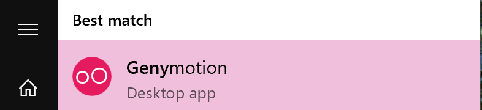
GenyMotion will launch, showing you the main applicaiton window:
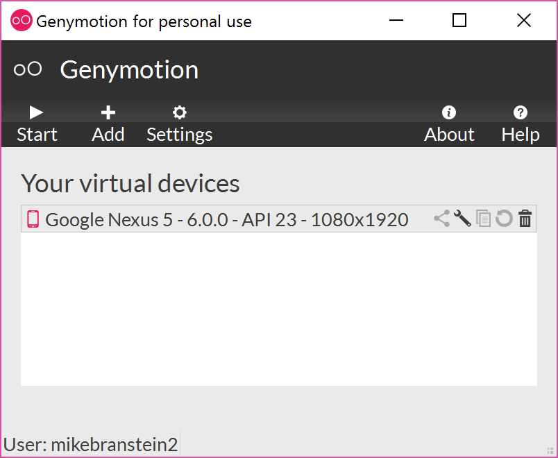
The GenyMotion app lists the available Android emulators in it's main window. With GenyMotion, you can add a variety of Android emulators. I've already added one for you, so just select the only emulator in the list, and press the Start button.

Time to be patient. Depending on how fast your machine is, GenyMotion may take several minutes to start the emulator. If you're using a laptop from me, I didn't spring for the best hardware, so it's slow and will take a couple of minutes.
Once the emulator has fully loaded, you should see an Android device running on your screen!
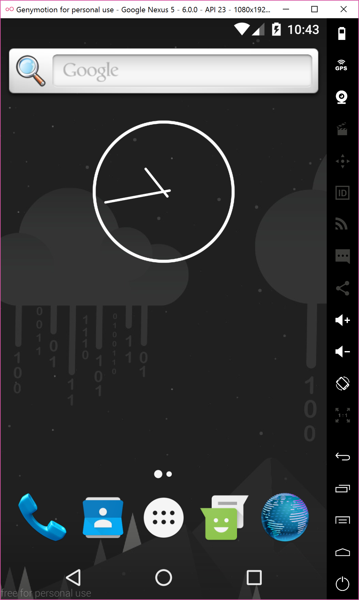
Running your app
Congrats! You're now running an Android emulator and are ready to get your NativeScript app running on the emulator. Let's come back to our app.
Exercise: Adding the Android platform
Before we run your app, we need to tell the app which platform we want to run it on. By default NativeScript apps don't assume you'll be running on any particular platform, so it's up to you to tell the app how to do this.
We'll use the tns platform add android CLI command to tell our app that it can run on Android. Run the command from the my-first-app directory:
tns platform add android
This will take a few minutes, so be patient.
Let's verify that the Android platform has been added to the NativeScript app. Look in the current directory again:
dir
Notice the platforms folder has been added.
Directory of C:\Users\mikeb\Documents\my-first-app
08/03/2016 10:26 PM <DIR> .
08/03/2016 10:26 PM <DIR> ..
08/03/2016 09:59 PM <DIR> app
08/03/2016 10:26 PM <DIR> node_modules
08/03/2016 10:26 PM 498 package.json
08/03/2016 10:25 PM <DIR> platforms
1 File(s) 498 bytes
5 Dir(s) 53,655,441,408 bytes free
Now, change to the platforms directory and look at the files within it:
cd platforms
dir
You'll see a folder named android. This folder contains the necessary files to run your app on an Android device. We're not going to dig into the contents of this folder, but if you're curious, take a look.
Directory of C:\Users\mikeb\Documents\my-first-app\platforms
08/03/2016 10:25 PM <DIR> .
08/03/2016 10:25 PM <DIR> ..
08/03/2016 10:25 PM <DIR> android
0 File(s) 0 bytes
3 Dir(s) 53,639,196,672 bytes free
Now that you've added the Android platform, let's finally run your app!
Exercise: Running your app
Before you actually run your app, let's make sure you're in your app's root directory C:\Users\dev\Documents\my-first-app:
cd C:\Users\dev\Documents\my-first-app
Run the app using the tns run android --emulator command.
tns run android --emulator
While you're waiting for your app to run in the emulator, let's take a moment to understand what's happening. When you run the tns run android --emulator command, you're telling the CLI to build your app, package it up, embed it within an Android .apk app, install it on to the running GenyMotion emulator, and run it.
After a few minutes, you should see your app running within the emulator:
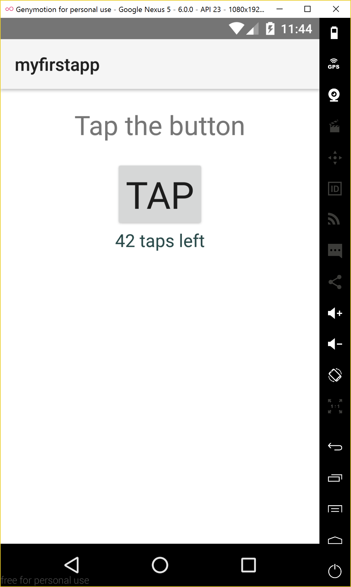
Go ahead and play with the app for a few seconds.
Understanding NativeScript apps
There's a lot going on under the scenes of your first app, so let's explore it together so you can get a feeling for the code within your first app.
Exercise: Running Visual Studio Code
Let's start by opening a code editor. My favorite, lightweight, (and free) editor is Visual Studio Code (VS Code). VS Code is already installed on your laptop if you're using one I've provided. If you need to download VS Code, go to VisualStudio.com and download VS Code for free.
To launch VS Code, click your Start Menu and type in code. Click on Visual Studio Code to run.
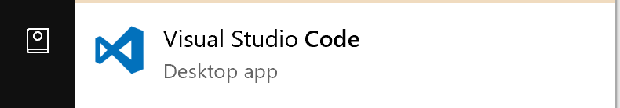
Once you're in VS Code, open your app's root directory, C:\Users\dev\Documents\my-first-app. You will see the app's file and folder layout on the left, and an editor window on the right. Be sure to use the Open Folder... option of VS Code.
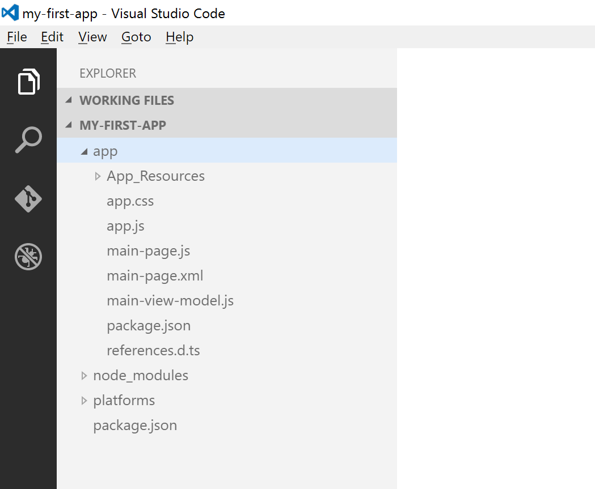
I'm not going to spend a lot of time teaching you about VS Code right now, so you may want to check out some of the videos and tutorials on VisualStudio.com for further reference.
Let's look closer at our app's code.
Exercise: Exploring your app's code
Let's back up to the tns create my-first-app CLI command and examine what's actually happening. I've shamelessly borrowed the following explanation from the official NativeScript docs, because it does such a nice job.
When tns create my-first-app is run, the CLI places the project in a new directory in the current directory. The newly created directory has the following structure.
my-first-app/
├── app
│ ├── App_Resources
│ │ └── Android
│ │ └── ...
│ │ └── iOS
│ │ └── ...
│ ├── app.css
│ ├── app.js
│ ├── main-page.js
│ ├── main-page.xml
│ ├── main-view-model.xml
│ ├── package.json
│ ├── references.d.ts
│ └── node_modules
│ └── ...
└── platforms
│ └── ...
└── package.json
You can see this same structure mirrored in your app within VS Code:
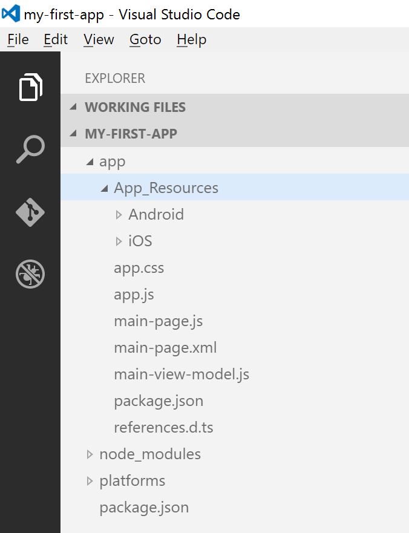
The app directory is the development space for your app. This is where you will write and modify code that will run when your app is run on a device (or in an emulator/simulator).
RULE: You can edit any file in (or under)
appdirectory; however, never modify files outside of this directory. Files outside of theappdirectory are managed by NativeScript: so, hands off!
The App_Resources directory contains Android and iOS platform-specific files like images, splash screens, and other files. Don't worry about these now.
The platforms directory also contains platform-specific files, and is used as a sort-of build folder for the actual Android and iOS mobile app projects. You really shouldn't concern yourself with this folder and it's contents. Just know it's here, and per our earlier rule, hands off!
RULE: Don't modify files in the
platformsfolder!
I'm not going to go in-depth into the node_modules folder or the two package.json files. If you're curious, I cover the details of these files and folders in NativeScript in Action.
Finally, we're getting to the real meaty stuff: app. files and main-page. files. When your app runs, the first piece of app code that runs is the app.js file. In a sense, you can think of the app.js file as a bootstrapper for your application. Let's open it up and see what's inside:
var application = require("application");
application.start({ moduleName: "main-page" });
This code tells NativeScript to load the application module (more on these later), then it directs the app to start by giving it the name of the first (or home) page of your app. In this case, the first page is named main-page, so when you app runs, it will automatically start by displaying main-page.
NOTE: Just like HTML applications, you can think of NativeScript apps as a collection of pages. You move between page by navigating, and you can also pass data (or app state) between pages during navigation.
DEFINITION: A page is a collection of similarly-named files (.xml, .css, and .js). The .xml file contains your UI code, the .css file styles your UI, and the .js file contains yoru business logic code. NativeScript uses conventions to tell which files constitute a page, so all you need to do is name your .xml, .css, and .js files with the same prefix.
So, back to pages. Now that we know about the NativeScript page-naming convention, you understand what the main-page page is: it's a collection of 3 files: main-page.xml (the UI), main-page.css (styling for the UI), and main-page.js (any business logic code that interacts with the UI).
Let's take a look at the main-page page and find the 3 files:
Hmmm, main-page.css is missing. That's strange...but it's OK. It turns out pages don't really need all of the files. You only really need the UI definition (.xml) file. The .css and .js files are optional. If they're present, NativeScript will use them, but if they're missing, it doesn't care.
We've spent a lot of time on the introductory pieces of NativeScript, but we haven't gotten to really dive in an create our own app, so it's time to pick up the pace. I'll be going a little faster from here on, so when you have questions or need clarifications, stop me and we'll talk about it.
Basic UI elements
In this section, you'll be learning about some of the basic UI elements that go into NativeScript apps.
What you're building
Over the course of the next several sections, you'll be building a mobile app for Tekmo, an imaginary company that sells retro video games and video game accessories. The app will have 4 pages:
- Home
- About
- Contact Us
- Product Listing
Creating the Tekmo app
Let's get started with the Tekmo app by scaffolding out a new app using the CLI.
Exercise: Creating the Tekmo app
In this exercise, you'll be creating a new app named "tekmo" and checking to ensure the app works by running it in the GenyMotion emulator. I'll let you try it by yourself. If you need help, you can follow the directions below.
Change directories back to your Documents folder before creating the Tekmo app.
cd C:\Users\dev\Documents
Create the app using tns create tekmo CLI command.
tns create tekmo
Change directories into the Tekmo app's root directory.
cd tekmo
Add the Android platform to the app using the tns platform add android command.
tns platform add android
Run the app in the GenyMotion emulator.
tns run android --emulator
You should see the Tekmo app running in GenyMotion.
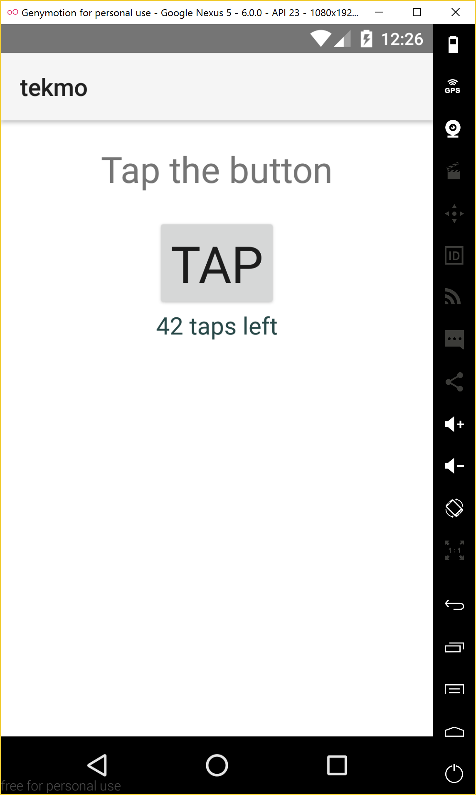
Cleaning up the template
As you've seen, the tns create command scaffolds a nifty "hello world" app. But, we don't really need all of that code. Let's clean up the app by removing several things.
Exercise: Clean up and create a blank start page
In this exercise, you'll be deleting the current start page, creating a new start page, and changing the
app.jsstart page to point to your new home page. We haven't learned about all of these items yet. Get as far as you can before looking ahead. If you need help, you can follow the steps below.
Using VS Code, open the tekmo app by using the Open Folder... command. You should see the following in VS Code:
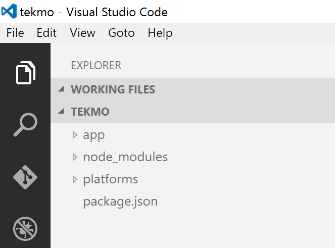
Expand the app folder and delete the existing main-page files (main-page.xml and main-page.js). You should also delete the main-view-model.js file: you won't need it.
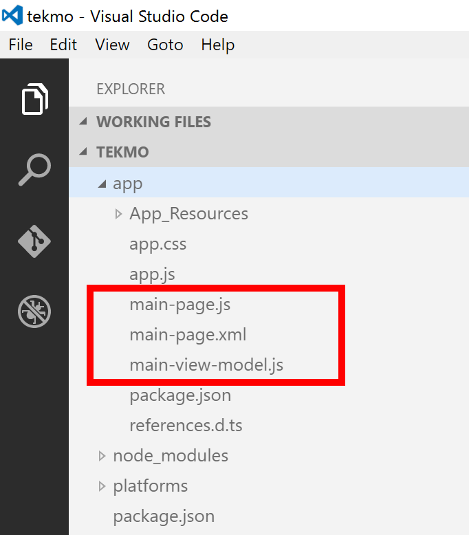
Create a new page named home-page.xml, placing it in the app directory.
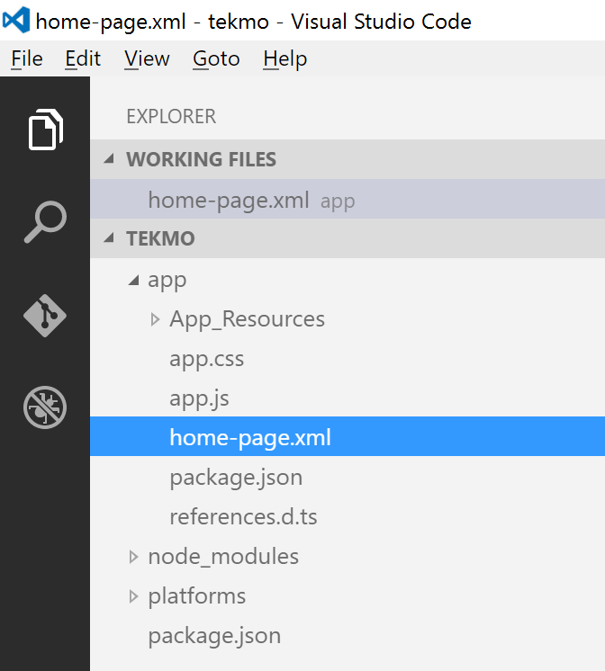
Inside of the home-page.xml file, add the following XML:
<Page>
</Page>
Modify the app.js file to point to the new home page by chaning the starting page from main-page to home-page:
var application = require("application");
application.start({ moduleName: "home-page" });
Re-run the app in your emulator using the tns run CLI command.
tns run android --emulator
When the app runs, it should have a blank page:
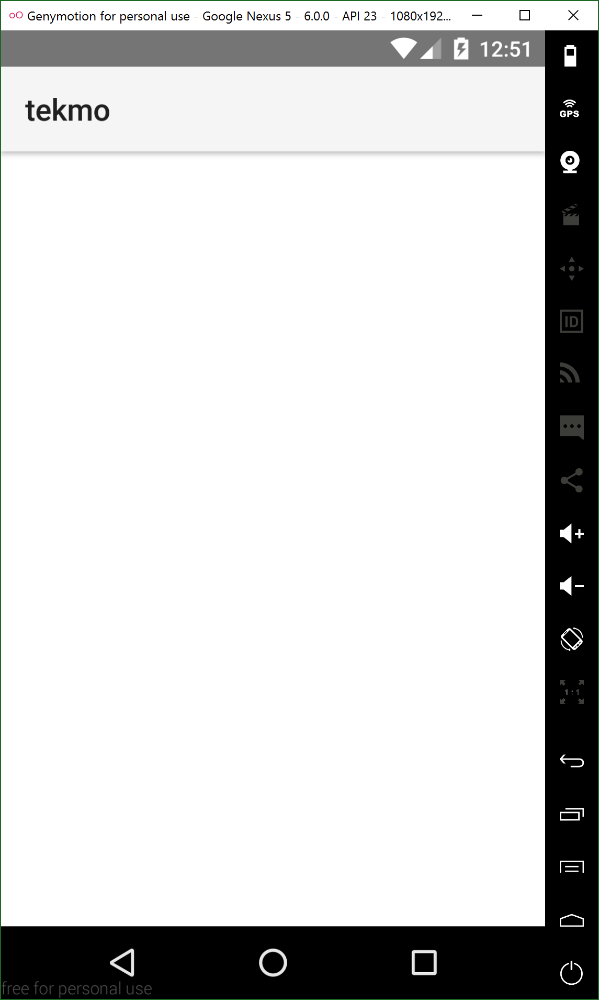
Great work! You've replaced the default template pages with your own home page. Now, let's learn a little bit more about pages and UI elements.
Pages
You've already learned that pages are a collection of similarly-named .xml, .css., and .js files. We'll dig into the .css and .js pages soon enough. Let's focus on the .xml file first.
Pages always begin with a .xml file. In this file, you define the UI by adding adding various XML elements. In many ways, you can think of this file like an HTML file. It has structure, driven by the elements added to it, and then is augmented by external CSS and JavaScript files.
The first element within a Page is always a <Page> ... </Page> element.
Labels
Let's learn about another UI element, the Label. Labels are used to place text on your screen.
Exercise: Adding text to the home page
Start by adding a Label to the home-page.xml file in the <Page> ... </Page> element.
<Label text="Welcome to Tekmo!" />
To see the changes in your app, go back to the command line, press Ctrl-C to and then Y to stop your app running.
<press Ctrl-C>
^CTerminate batch job (Y/N)? Y
C:\Users\dev\tekmo>
Then, run the tns run command again to build and run your app within GenyMotion.
tns run android --emulator
Your app will reload and show you the home page with the updated text.
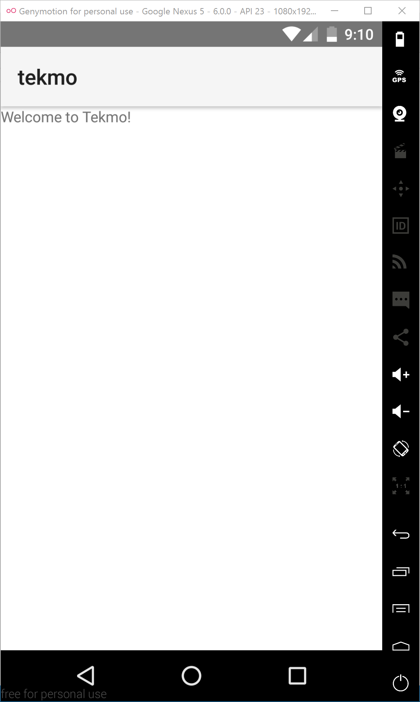
As you just learned above, you can add text by using the <Label text="..." /> element.
Now, let's go ahead an create the About, Contact Us, and Products pages. But before we do that, let's talk about your development process and workflow (which ends up being fairly important). Just like developing HTML applications, NativeScript apps follow a similar development process:
- You made code changes in an editor or IDE (i.e., VS Code)
- You compile/build the changes (using
tns run android --emulator) - You review the changes in your app using your emulator (i.e., GenyMotion)
Hold on...this takes a long time. Ideally I'd like to make changes, then quickly look at them in GenyMotion (without manually running
tns run...every single time.)
Luckily, there is a better way. Let me introduce you to LiveSync.
LiveSync makes changes easy
Yes it's true. LiveSync will make your life easier. LiveSync is a component of the NativeScript CLI that listens for changes in your app, then automatically syncs them to a running emulator. Let's try it out.
Exercise: Using LiveSync
Head back to your command prompt and terminate the tns run... command that is running again by pressing Ctrl-C to and then Y.
<press Ctrl-C>
^CTerminate batch job (Y/N)? Y
C:\Users\dev\tekmo>
Now, use the tns livesync android command to tell the NativeScript CLI to --watch your app folder for changes and sync them to your running --emulator:
tns livesync android --emulator --watch
The output from LiveSync is similar to that of the tns run... command, and it will yield the same results: run your app.
Let's see what happens when you make a change. Head back to VS Code and change the text of the Label in the home-page.xml file.
<Label text="Welcome to the Tekmo app!" />
As soon as you save the home-page.xml file, flip back to GenyMotion to see the changes happen. It may take 2-3 seconds, so be patient.
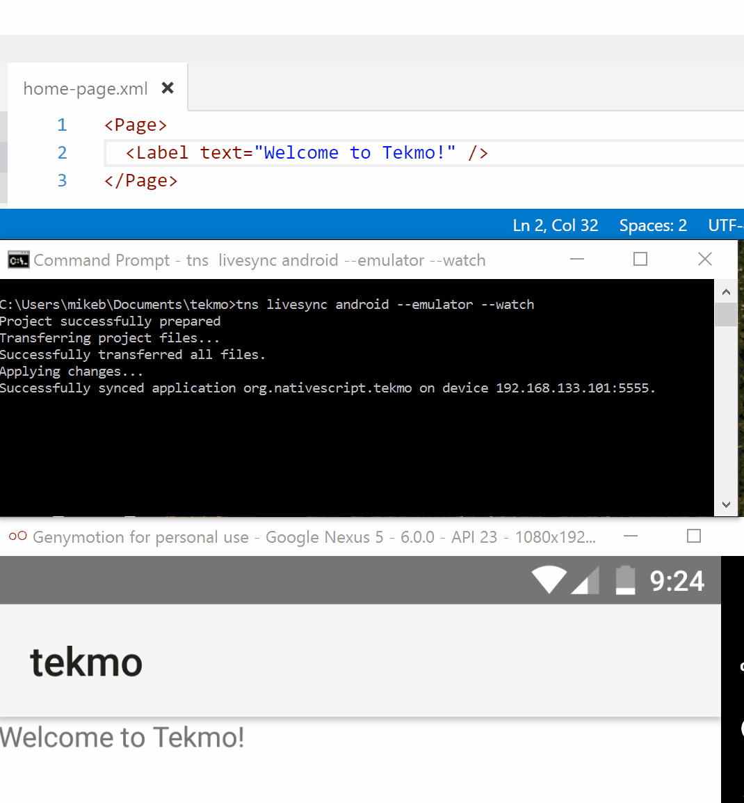
As you can see LiveSync is a powerufl CLI tool that can dramatically reduce your dev-build-test workflow.
From this point forward, use
tns livesync, as it will same you some time.
Adding more pages
Let's continue adding the remainder of our app pages: About, Contact Us, and Products. For now, each page should have a label on it with the page's name. I'll let you try it on your own, but if you get stuck or can't remember the exact syntax, you can follow along below.
We haven't learned how to navigate between pages yet, so to test each page, replace the startup page in the app.js file.
Exercise: Adding the About page
Create an XML file named about-page.xml in the root of the app folder.
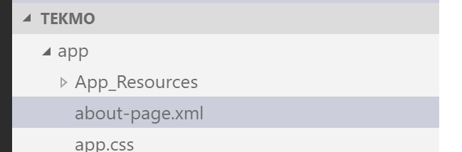
Add the Page and Label elements to the about-page.xml file.
<Page>
<Label text="About" />
</Page>
To test your page, change the app.js file to load the about-page page first.
var application = require("application");
application.start({ moduleName: "about-page" });
Wait for LiveSync to load your changes in GenyMotion.
Next, let's add the Contact Us page.
Exercise: Adding the Contact Us page
Create an XML file named contact-us-page.xml in the root of the app folder.
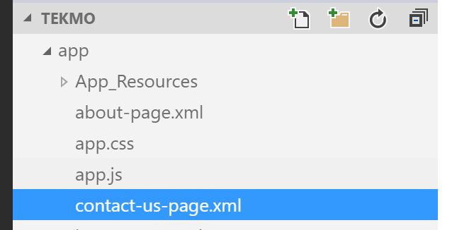
Add the Page and Label elements to the contact-us-page.xml file.
<Page>
<Label text="Contact Us" />
</Page>
To test your page, change the app.js file to load the contact-us-page page first.
var application = require("application");
application.start({ moduleName: "contact-us-page" });
Wait for LiveSync to load your changes in GenyMotion.
Lastly, add the Products page.
Exercise: Adding the Products page
Create an XML file named products-page.xml in the root of the app folder.
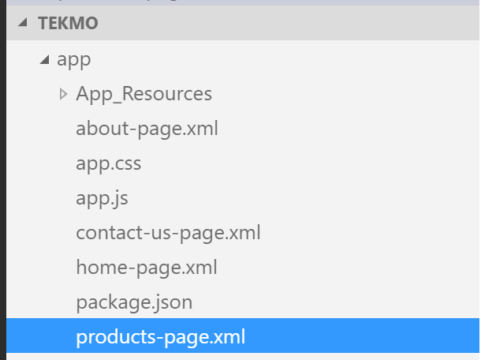
Add the Page and Label elements to the products-page.xml file.
<Page>
<Label text="Products" />
</Page>
To test your page, change the app.js file to load the products-page page first.
var application = require("application");
application.start({ moduleName: "products-page" });
Wait for LiveSync to load your changes in GenyMotion.
Navigation
You've learned how to create pages and add text to pages with the <Label text="..." /> element. But, switching the default start page for the application just to test each page is a little cumbersome.
Just like HTML applications, NativeScript apps are a collection of pages. Similarly, moving between pages is called navigating.
In this section, you'll be learning how to navigate between pages by placing a Button on a page, attaching a tap event to the button, and responding to the tap event by writing some JavaScript code.
Adding multiple UI elements to a page
Before we go too much further, I need to introduce you to something called a layout. Layouts are UI elements (similar to the <Label /> element) that allow you to organize the UI of each page.
Up until now, we've been putting <Label /> elements directly underneath the <Page> element of each page. What is not completely obvious is that most UI elements (like <Page>) can only have a single child element. You can technically add multiple elements within a <Page>element; but they won't display in your app.
To display multiple elements on a page, you need to use a layout.
Let's learn about the simplest (and most common) first layout.
Exercise: Using the StackLayout to organize UI elements in a "stack"
Go to the home-page, and add a <StackLayout> element to the page, directly within the <Page> element. Move the exisitng <Label /> element inside of the <StackLayout>.
<Page>
<StackLayout>
<Label text="Welcome to the Tekmo app!" />
</StackLayout>
</Page>
Change the app's default starting page back to the home-page page.
var application = require("application");
application.start({ moduleName: "home-page" });
As you can see, the home page doesn't look very different.
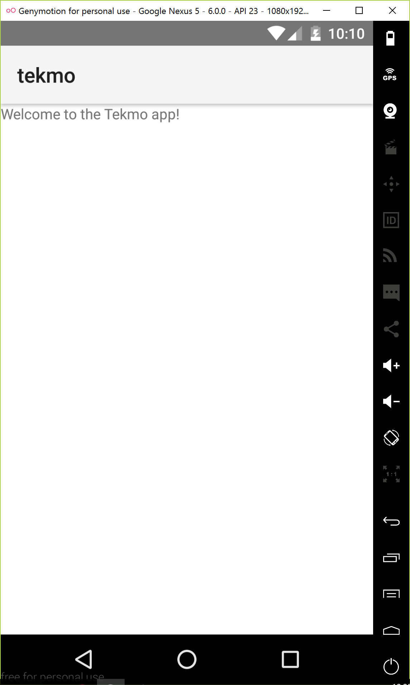
Add another <Label /> element and observe the changes.
<Page>
<StackLayout>
<Label text="Welcome to the Tekmo app!" />
<Label text="To navigate to another page of the Tekmo app, use the buttons below." />
</StackLayout>
</Page>
As you can see, the <StackLayout> stacks UI elements on top of each other on a page.
Wrapping text
But wait! Do you see the text you just added? It's running off the side of the page.
NOTE: By default, text within a
<Label />element does not wrap to new lines.
Let's learn how to fix that.
Exercise: Wrapping text
Add the textWrap="true" attribute to the <Label /> element to wrap the text to multiple lines.
<Page>
<StackLayout>
<Label text="Welcome to the Tekmo app!" />
<Label textWrap="true" text="To navigate to another page of the Tekmo app, use the buttons below." />
</StackLayout>
</Page>
Now, your text will wrap to multiple lines!
Navigating with Buttons
We've finally made it to navigation. If you recall, I said we'd be doing 3 things to navigate from one page to another:
- Add a
<Button />element to the page - Add the
tapevent to the button - Write JavaScript code to respond to the
tapevent and navigate to a new page
Exercise: Add a button to a page
Add a <Button /> element to the page, after the last <Label />. Buttons have a similar property named text that allows you to change the text of the button.
<Button text="About" />
Next, add a tap event atribute to the <Button /> element. Most UI elements have a variety of events that can execute JavaScript code when triggered. When an event is triggered, it will automatically run the funciton name specified in the event attribute.
<Button text="About" tap="onTap" />
The complete code listing for the home-page page is below.
<Page>
<StackLayout>
<Label text="Welcome to the Tekmo app!" />
<Label textWrap="true" text="To navigate to another page of the Tekmo app, use the buttons below." />
<Button text="About" tap="onTap" />
</StackLayout>
</Page>
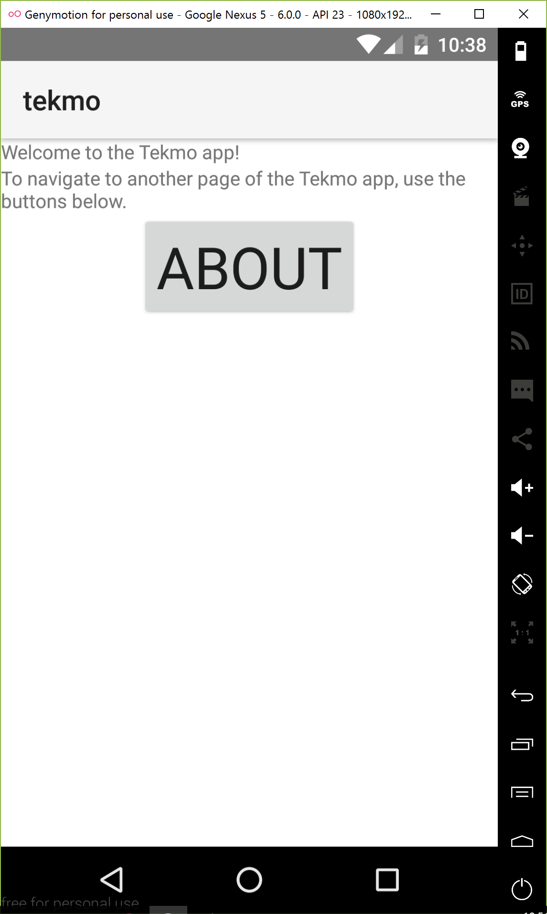
In the above code, when the button's tap event is triggered (i.e., when the button is tapped), the JavaScript function named onTap will be called. But, where does the onTap function reside?
If you recall from an earlier section, you learned that NativeScript pages are a colleciton of XML, CSS, and JavaScript files, linked together by their naming convention.
With this in mind, to associate JavaScript code with the home-page page, create a file named home-page.js.
Exercise: Link the button's onTap event with the onTap() JavaScript function
Create a file named home-page.js in the app folder of your app.
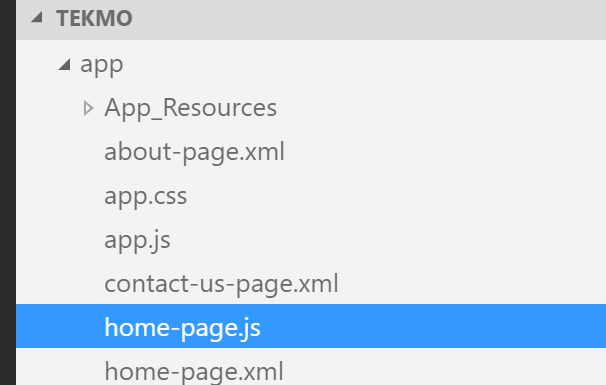
Open the file in VS Code and add a function named onTap. Be sure to export the function, so the page can access it.
function onTap()
{
// do something
}
exports.onTap = onTap;
Head back to GenyMotion, wait for your app to reload, and click the About button. Pressing the button doesn't do much right now. In fact, nothing happens because the onTap function is empty.
Learning to use console.log
One of the easiest ways to tell what's happening in your NativeScript code is by using the console.log() function. console.log() outputs text to the command line. Let's add it to the About button's onTap event.
Exercise: Logging messages to the command line
Add a call to console.log() to the onTap() function.
function onTap()
{
console.log('onTap called...');
}
exports.onTap = onTap;
Wait for your app to relead in GenyMotion, then click the About button. You should see the text onTap called... output to your command line.
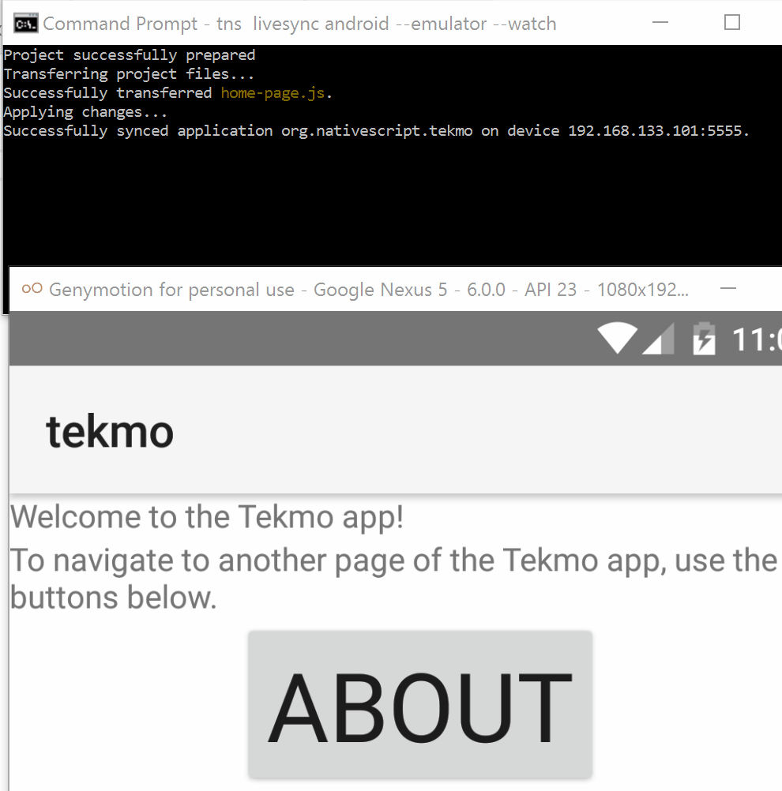
An introduction to modules
The last thing you need to learn about before navigating between pages is the NativeScript code modules. The core modules are cross-platform abstractions provided by NativeScript that allow you to interact with various aspects of the Android and iOS platforms (i.e., cameras, images, files, and navigation).
The modules are actually written in TypeScript, transpiled down to JavaScript, and included in every NativeScript project by default. You don't need to know how the modules work under the scenes, but sometimes it's neat to see the guts of NativeScript. Let's take a quick look.
Exercise: Looking at the core modules
As I've said, the core modules are included in every NativeScript project. These are included in the project by using npm. You don't need to manually run npm to include the core modules.
To find the core modules, go back to VS Code. Open the node_modules folder that is in the root of the tekmo app. Note: this is not in the app folder, it is outside the folder.
In the node_modules folder, open the tns-core-modules folder. There's a lot to see here.
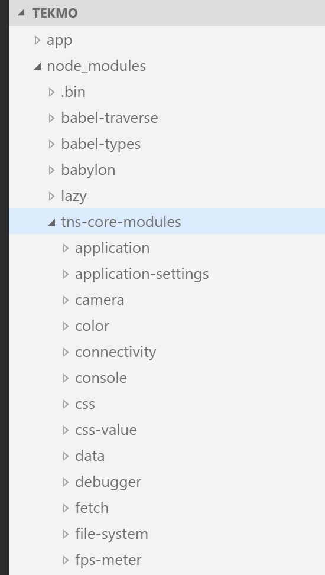
Inside of the tns-core-modules folder is a massive hierarchy of folders and files. These files make up the entirety of the NativeScript framework. You'll learn how to use these throughout the lab, but I also want to point you to the official NativeScript documentation, which is a comprehensive listing the core modules and how to use them.
Inside of the tns-core-modules folder, find the folder ui and then sub-folder frame. Go ahead and open the frame folder.
WARNING: Be careful when you're looking at modules. Don't change their code!
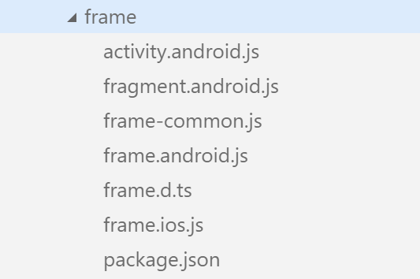
Inside, you'll find a variety of files.
The frame module is used to navigate between pages, so we'll be using it later. I don't want to go into the weeds too far here, becuase it's not really important for you to know how and what the frame module does, but as we beign to use modules, just know that if you're curious to know how and what module functions do, you can always come and look at their source code directly in the tns-core-modules folder.
Take a few minutes to explore the module code (if you'd like). Close the modules folders and files if you have them open before you continue.
Navigating to another page
After the brief detour looking at the core modules, let's get back on track with navigation between pages.
Exercise: Navigating from the home page to the about page
Return to the home-page.js file, where we added the onTap() function.
function onTap()
{
console.log('onTap called...');
}
exports.onTap = onTap;
We'll be modifying this code to load the frame module and then use the navigate() method of the frame module to navigate to the about page.
Import the frame module by using the require() function. Place this at the top of the home-page.js file.
var frameModule = require('ui/frame');
NOTE: You don't need to give NativeScript the full path to the frame module. This is because NativeScript has special conventions built into the framework that know exactly how to find and load modules by specifying a folder.
To navigate from one page to another, you use the navigate() function of the topmost() property on the frame module. Add the following code to the onTap() function.
frameModule.topmost().navigate("about-page");
So, you may be thinking, "What's this topmost() thing?" Every page in a NativeScript app has something called the topmost frame. To get the topmost frame, we use the topmost() property of the frame module. Once you have that topmost frame, you can call the navigate() function to navigate to another page.
NOTE:
navigate()can take additional arguments to perform different types of animated naivgations, and to pass data between pages when navigation occurs. You'll learn how to do that later.
Let's check the results of the navigation in your emulator. Tap the About button and you should navigate to the about page.
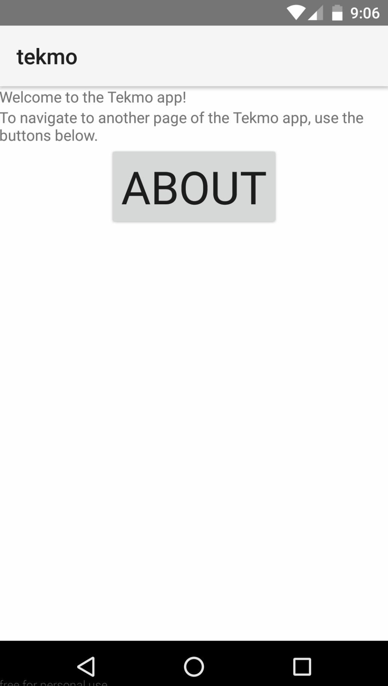
If you're running on Android, you can hit the back button to return to the Home page. On iOS, you'll notice a < Back button at the top of the page, automatically added.
NativeScript keeps track of your navigation history, so this is built into the framework. There are ways to remove the back button and to tell NativeScript to not track your history; however, I'm not going to cover that here. Check out the docs for details.
For reference, here's the complete code for the home-page.js file, including the navigation to the About page.
var frameModule = require('ui/frame');
function onTap()
{
console.log('onTap called...');
frameModule.topmost().navigate("about-page");
}
exports.onTap = onTap;
Go ahead and add buttons to the home page for navigation to the Contact Us and Products pages, then adding the necesary code to navigate to each page. Try it all by yourself first. If you get stuck, look back through the exercises. The code is also included below for reference.
Exercise: Navigating to the Contact Us page
Add a button to the home-page.xml file.
<Button text="Contact Us" tap="onTapContactUs" />
Add the event handler code in the home-page.js file.
function onTapContactUs() {
frameModule.topmost().navigate("contact-us-page");
}
exports.onTapContactUs = onTapContactUs;
And now the Products page.
Exercise: Navigating to the Products page
Add a button to the home-page.xml file.
<Button text="Products" tap="onTapProducts" />
Add the event handler code in the home-page.js file.
function onTapProducts() {
frameModule.topmost().navigate("products-page");
}
exports.onTapProducts = onTapProducts;
Working with more text
You've already learned about the stack layout in previous exercises. You'll recall that it allows you to stack UI elements on a page by placing the elements inside of a <StackLayout> ... </StackLayout> tag.
That's the basics of the stack layout, and truthfully, there's not a lot more to tell you. So, let's move on to the About and add more content using the stack layout.
Adding content to the About page
The About page should tell app users about the Tekmo company, it's origins, it's inspirations, and get them excited about Tekmo. So, let's use the stack layout and some label elements to add content.
Exercise: Adding content to the About page using stack layouts and labels
Remove the existing label in the about-page.xml file and replace it with a <StackLayout> ... </StackLayout> element so we can put multiple elements on the screen.
The About page should look like this:
<Page>
<StackLayout>
</StackLayout>
</Page>
Now, add several labels describing Tekmo. You may want to use the Copy feature to the right for this one, it's a lot of text to type in manually.
<Label text="About Tekmo" />
<Label textWrap="true" text="Tekmo is a small online retailer specializing in retro video games sales and services. We're based in Lousiville, KY." />
<Label text="Our Mission" />
<Label textWrap="true" text="We exist to bring our customers the best in retro gaming at an affordable price. We love to revisit and replay the games that shaped our childhoods, and believe that through sharing our love, we can help shape another generation of retro gaming geeks." />
<Label text="History" />
<Label textWrap="true" text="In the early 90's, it all started with Rescue Pups. This multi-player vintage platformer brought the Rambo-style side-scrolling gun fights to life in our living room. True, it was impossible to beat with the 3 lives you got by default, but that's why everyone knew the 50 lives code by heart: up, up, down, down, left, right, left, right, B, A, Start. And if you wanted a friend to play along, you could throw in the Select, Start at the end." />
<Label textWrap="true" text="After Rescue Pups, it was the classics like Super Marshmallow Man and Vampire Valkyrie. Do you remember them? We do. And we loved it! We hosted sleep overs every weekend throughout the summer, stayed up too late, got in trouble, pretended to fall alseep, then crept downstairs in the middle of the night to continue the fun." />
<Label textWrap="true" text="As we grew older, the games we played did too, but our love for the originals never stopped, and our passion for sharing these games with our friends and family grew." />
<Label textWrap="true" text="After many year, we all started having kids of our own, and we found ourselves wanting to raise our kids in our footsteps (without the midnight gaming marathons, of course). We wanted our kids to relive the adventure. Relive the thrills. Relive the classics. Tekmo was born." />
<Label textWrap="true" text="We remembered how cool it was to get 50 lives, so now our kids could enjoy playing through Rescue Pups for hours." />
<Label textWrap="true" text="And then there was Vampire Valkyrie: a side-scrolling adventure into the depths of Transylvania seeking out Dracula and his minions. After gathering your supplies in local towns, you embarked on a journey through the countryside to rescue trapped village people. We never forget to bring your stake and darn your garlic. And when we finally meet Dracula face-to-face, holy water didn't save us. And now, the fate of the world is on another 7 year old's shoulders." />
<Label textWrap="true" text="Lastly, Super Marshmallow Man is the one that pushed us over the edge with its iconic landscapes filled with clouds and wonderous sky scenes. We regularly play through the 12 worlds of Mallow Kingdom while avoiding the hungry Chompers with our friends and families: the best part is still watching someone get too close to the flames and melt!" />
Here's what you should see in your emulator.
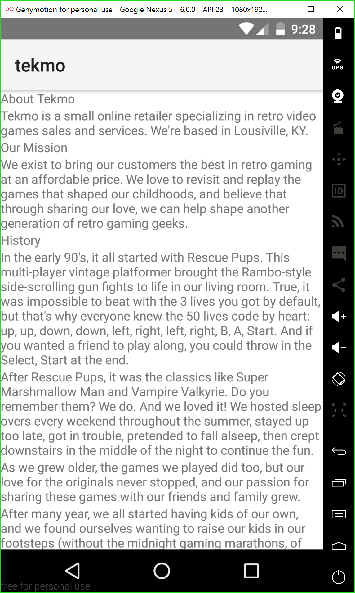
Scrolling
Your app is really starting to come together. Looks good. But wait! The text on the About page scrolls off the bottom of the page.
Go ahead try and scroll in your emulator by simiulating a tap and drag to scroll the page's content.
You can't.
This brings me to a fine point. In order to make your page's content scrollable, you need to use the <ScrollView> ... </ScrollView> element.
Exercise: Making page content scrollable
Between the <Page> and <StackLayout> elements, add a <ScrollView> element. The scroll view should wrap the entire stack layout like so:
<Page>
<ScrollView>
<StackLayout>
<Label text="About Tekmo" />
...
</StackLayout>
</ScrollView>
</Page>
Go back to your emulator and try scrolling, it should now work!
NOTE: All of the examples in the workshop place the scroll view element as the first element of a page: this makes all of the content of the page scrollable. Truth be told, you can place a scroll view anywhere on page, and your app's design may require only part of the page as having scrollable content. I won't go into details in the workshop on the various combinations, but I cover this in greater detail in my book,NativeScript in Action.
I'm going to declare the About page finished (for now). Let's move on to the Contact Us page.
Collecting data from users
Up until now, we've been focused on displaying data to your app users, but most mobile apps aren't just sources of information, they also count on your interacting with them by collecting and submitting data.
In this section, you'll be building out the Contact Us page. As with most Contact Us pages within HTML applications, ours will allow the mobile app user to submit a question to Tekmo through a form.
But, that's where the similarities stop. Although users will be submitting data through a form-like UI, they won't actually be interacting with an HTML form.
NativeScript apps are native mobile apps. That means they're stateful and don't need to mess with HTML forms: thank goodness!
NOTE: Throughout these exercises, you'll be structuring your code very similar to the previous chapter where we added UI elements, added events to the UI elements to detect user interaction points, attached event handlers, and wrote business logic inside the event handlers. This is a common NativeScript development workflow that you will repeat throughout the lifecycle of your app's developement. I like to point this out, because it's relatively straight-forward and helps you to understand what to expect when developing apps with NativeScript.
Building a data collection UI
Before we jump straight into code, let's talk about what we're building. We want the Contact Us page to allow app users to submit a question or feedback message. In the spirit of keeping it simple, our message will have a subject and body, with a button allowing us to submit the message.
Exercise: Making page content scrollable
Start by replacing the elements in the contact-us-page.xml page with the <Page>, <ScrollView>, and <StackLayout> elements.
<Page>
<ScrollView>
<StackLayout>
</StackLayout>
</ScrollView>
</Page>
Add a <Label /> element to the page to describe how a user can contact Tekmo. Place the label in the stack layout.
<Label textWrap="true" text="Contact us by submitting a message below." />
Add a <TextField /> element underneath the label. This element will be used to accept the message subject. To let the users know the intent of the text field, let's also add an additional label right above the text field.
<Label text="Subject:" />
<TextField />
Add a <TextView /> element and another label beneath the pair of subject elements.
<Label text="Body:" />
<TextView />
Finally, add a button to submit the message to Tekmo. Be sure to add the tap attribute so we can respond to the tap event later.
<Button text="Submit" tap="onTap" />
The complete code should look like this:
<Page>
<ScrollView>
<StackLayout>
<Label textWrap="true" text="Contact us by submitting a message below." />
<Label text="Subject:" />
<TextField />
<Label text="Body:" />
<TextView />
<Button text="Submit" tap="onTap" />
</StackLayout>
</ScrollView>
</Page>
You should see the following on the Contact Us page within your emulator.
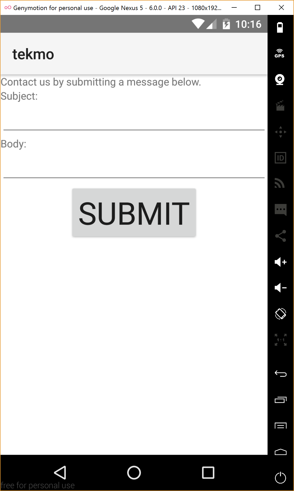
I just introduced you to two new UI elements: the <TextField> and <TextView> elements. They're both used for collecting user input, with the only significant difference being that the text view allows you to collect multiple lines of text from a user.
Refactoring to clean up the UI
After looking at the Contact Us page, it seems a bit cumbersome to create both a label and a text field/view for each data entry field. The labels feel somewhat mandatory, because without them, the user wouldn't know the purpose of these two data fields. Even worse, if you're used iOS, you won't even know the data fields exist, because iOS doesn't wrap any visual cues around UI elements. So, these text field/views appear are blank spaces on the screen.
Exercise: Refactoring the text field and view
Text fields and text views have an attributed named hint that places temporary text in the text box. When a user types into the text field or view, this temporary text disappears and is replaced with whatever they type.
Add the the hint attribute to the text field and view.
<TextField hint="Enter the subject..." />
<TextView hint="Enter the message..." />
Look at your emulator and see the results. Play with it, by clicking in each of the fields and entering text. Note that as you type, the temporary text you specified in the hint attribute disappears. Also note that when you delete any text you entered, the hint attribute text comes back. Pretty cool!
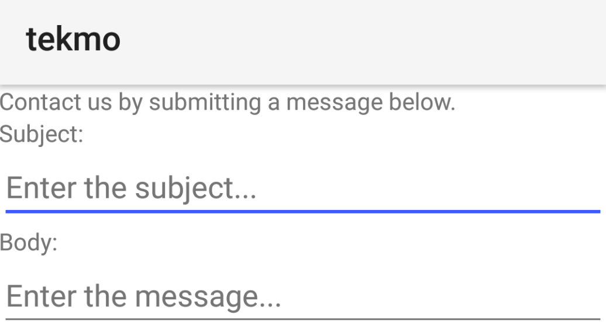
But wait, there's more! By adding the hint attribute, we've elminated the need for the descriptive labels.
Remove the labels from the page. The entire page should look like the code and screenshow below.
<Page>
<ScrollView>
<StackLayout>
<Label textWrap="true" text="Contact us by submitting a message below." />
<TextField hint="Enter a subject..." />
<TextView hint="Enter a message..." />
<Button text="Submit" tap="onTap" />
</StackLayout>
</ScrollView>
</Page>
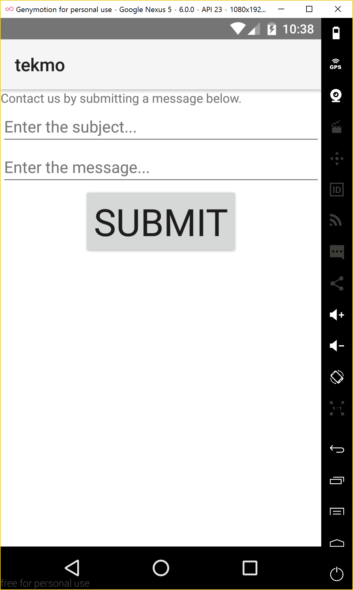
Responding to the button tap
I almost forgot: we haven't finished the page. Try this on your own.
Go ahead and add the tap event handler for the submit button. For now, you can log a message to the console to let you know the handler actually works. If you get stuck, look back at a previous exercise, or follow along with the code below.
Exercise: Add tap event handler for the submit button
Create a file in the app directory named contact-us-page.js.
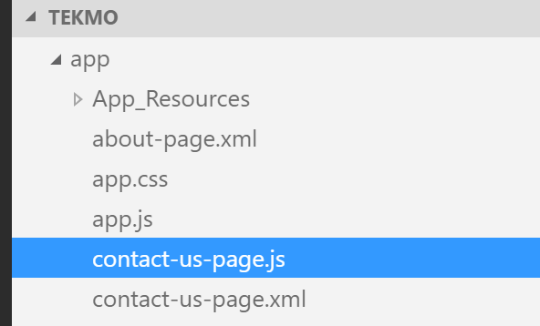
Add the onTap() event handler to the contact-us-page.js file, making sure to export it so the page can find the function.
function onTap() {
console.log("Submitting message...");
// todo: add code to get data out of text field and view, then submit to Tekmo
// step 1: get data out of text field and text view
// step 2: submit data to Tekmo
}
exports.onTap = onTap;
Test out your changes, and check the command line for the console output when you click the submit button.
In the next two exercises, we'll be adding code to get the data out of the text field and text view, then submit the data to Tekmo.
Let's start by adding some code to grab the data out of the text field and text view on the Contact Us page.
NOTE: There are several ways of getting data in and out of UI elements. You'll be learning several of them throughout this workshop. To start, you'll be learning a very manual way, then I'll introduce you to an easier way in a future exercise.
Exercise: Get data out of a text field and text view
To get data out of a text field or text view, we'll need access to the currently running NativeScritp page. The easiest way yot get access to the page is to save a reference to it when the page first loads.
Create a variable to save the reference to the current page at the top of your contact-us-page.js file.
var page;
Get a reference to the page when the page first loads by handling the loaded event of the NativeScript page.
Add a loaded="onLoaded" attribute to the contact-us-page.xml file's <Page> element.
<Page loaded="onLoaded">
Add the corresponding handler function to the contact-us-page.js file.
function onLoaded(args) {
// todo: save page reference
}
You'll notice the onLoaded() handler function has an args argument variable. Every event handler has an argument; however, up until now, we have ignore this optional parameter. This argument contains useful information about the event that has just happened, and often contains a reference to the object (or element) that the event is attached to. In our case the element belonging to the onLoaded() event is the <Page> element, so let's use the argument to grab a reference to the page.
Change the onLoaded() function definition to save the page reference.
function onLoaded(args) {
// saves a reference to the Contact Us page
page = args.object;
}
Now that we have a reference to our page, we'll be using the getViewById() function of the page to get a reference to the text field and text view.
Before we do this, we'll first need to add an id property to the text field and text view.
<TextField id="subject" hint="Enter a subject..." />
<TextView id="message" hint="Enter a message..." />
Now, get a reference to each of the UI elements by using the getViewById() function of the page. Place this code right under the // step 1: comment of the onTap() function.
var subjectElement = page.getViewById("subject");
var messageElement = page.getViewById("message");
Get the entered text from each element by using the text property.
var subject = subjectElement.text;
var message = messageElement.text;
To double-check your work so far, add in a few console.log() commands to output the captured subject and message values. Test it out!
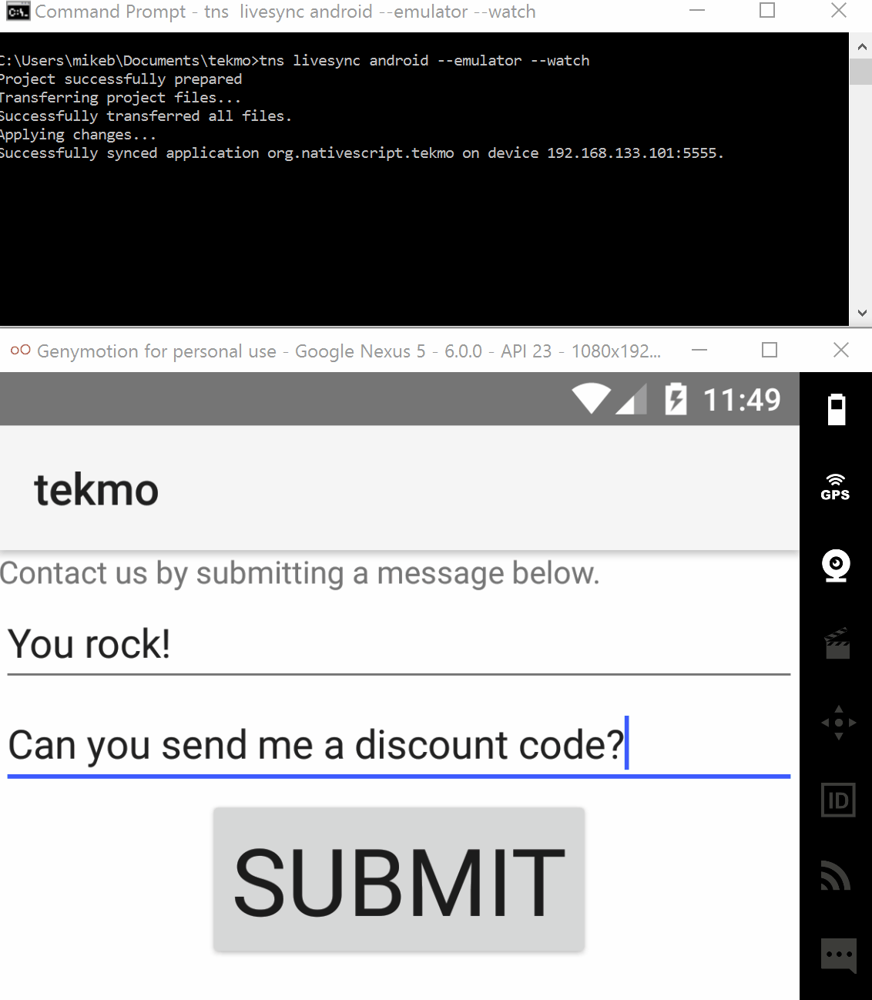
For reference, here is the complete code listing for the Contact Us page.
For contact-us-page.xml:
<Page loaded="onLoaded">
<ScrollView>
<StackLayout>
<Label textWrap="true" text="Contact us by submitting a message below." />
<TextField id="subject" hint="Enter a subject..." />
<TextView id="message" hint="Enter a message..." />
<Button text="Submit" tap="onTap" />
</StackLayout>
</ScrollView>
</Page>
For contact-us-page.js:
var page;
function onLoaded(args) {
page = args.object;
}
exports.onLoaded = onLoaded;
function onTap() {
console.log("Submitting message...");
// todo: add code to get data out of text field and view, then submit to Tekmo
// step 1: get data out of text field and text view
var subjectElement = page.getViewById("subject");
var messageElement = page.getViewById("message");
var subject = subjectElement.text;
var message = messageElement.text;
console.log(subject);
console.log(message);
// step 2: submit data to Tekmo
}
exports.onTap = onTap;
Now that you've gotten the data out of the text field and view, it's time to send the data over to Tekmo. In this next exercise, we'll be encoding our message in JSON and sending data to Tekmo via REST API endpoint.
This is more of an advanced topic for discussion, and isn't necessarily NativeScript-specific; however, almost every mobile app you create will interact with some remote web service or REST API, so I feel it's important to highlight and show you how this is done in a NativeScript app.
NOTE: I just dropped a lot of new terms on your plate that you might not be familiar with, like JSON and REST API. Don't worry if you don't understand everything. You can just copy and paste the code in the next section, or skip it all together. This is the last part of this section, so just ahead to the next chapter if you don't want to follow along.
Exercise: Sending our message to Tekmo as JSON via their REST API
Start by adding a reference to the http module at the top of the contact-us-page.js file. The http module allows you to send HTTP requests to an endpoint, which is exactly what we want to do. The module is part of the core modules, which means the framework is doing all the heavy lifting for you (i.e., working with the Android and iOS specific function calls to make HTTP calls simple).
Read the NativeScript documentation on the http module for more information.
var httpModule = require("http");
Build a stringified JSON object containing the subject and message. This (and all subsequent code) should go directly beneath the // step 2 commend of the onTap() function.
var data = JSON.stringify({
"subject": subject,
"message": message
});
Finally, make the request, passing in the URL (https://nstweet.brosteins.com/api/message), the HTTP method (POST), the HTTP header telling the REST API the data is being sent over in JSON format, and the stringified JSON data.
The function call to
request()returns a promise, which may not be something you're familiar with. That's ok. Check out the link I provided, and you should be able to decipher what's happening below (which is essentially, making an HTTP request, and the.then()call holds the success and failure code paths of that original request).
Note this is an endpoint I setup for the lab. It may not be very long-lived, so, if you're receiving 404 NOT FOUND messages, I would assume it's no longer available.
httpModule
.request({
url: "https://nstweet.brosteins.com/api/message",
method: "POST",
headers: { "Content-Type": "application/json" },
content: data })
.then(function(response) {
// success
console.log(response.statusCode);
}, function(e) {
// error
console.log("Error occurred: " + e);
});
Now, let's try it out, and you should see that when a user clicks the submit button, the message is sent to Tekmo and the response from Tekmo's REST API service has responded back with 200 in the command prompt.
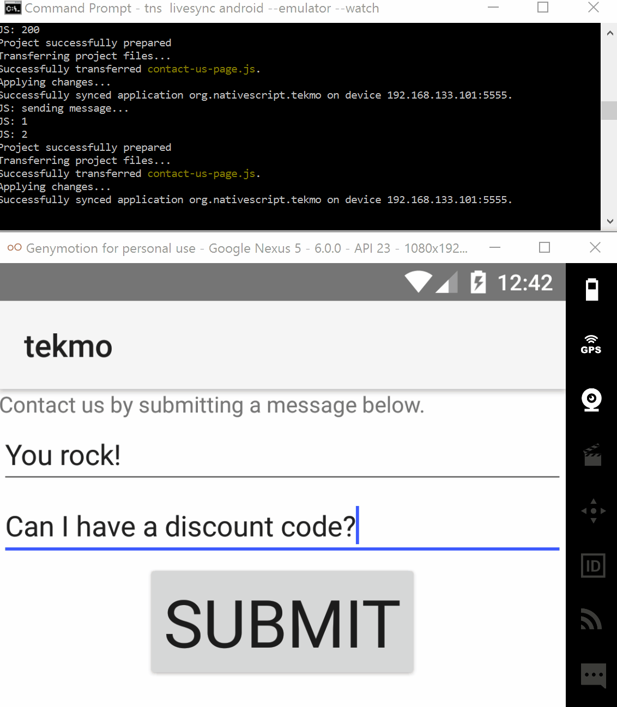
Nice work!
Providing better feedback
You've done great sending and receiving data from Tekmo's REST API service, but something doesn't feel right. Mobile apps are about having a good user experience, and last time I checked, making a user read console or command line output to let them know their message was successfully submitted to Tekmo is not in the dictionary under "good user experience".
Let's change that by providing the user with a visual indicator their message was successfully sent in our final exercises of this chapter.
Exercise: Using the dialog module to provide visual feedback
The dialog module provides you with a variety of "pop-up" windows (or dialog windows) for providing feedback to users. Because it is also part of the NativeScript core modules, there's nothing special you need to do to start using it aside from importing the module into your JavaScript code.
Start by importing the dialog module using the require() syntax at2 the very top of the contact-us-page.js file.
var dialogModule = require("ui/dialogs");
NativeScript has 5 different types of dialogs:
- alert
- confirmation
- prompt
- login
- action
The dialog documentation has examples of each dialog type, so I'm not going to give you examples of each. I encourage you to review the various types, because they save you time (i.e., the login dialog provides a great cross-platform way of authenticating users with a few lines of code instead of writing dozens).
You'll be using the alert dialog. The alert dialog displays a small dialog window, with a custom message, and a single button.
Add a dialog alert below the console.log() calls with the httpModule.request() success and error code.
...
.then(function(response) {
// success
console.log(response.statusCode);
dialogModule.alert("Your message has been sent.");
}, function(e) {
// error
console.log("Error occurred: " + e);
dialogModule.alert("We couldn't send your message right now. Try again later.");
})
Run the updated app to see how dialogs work.
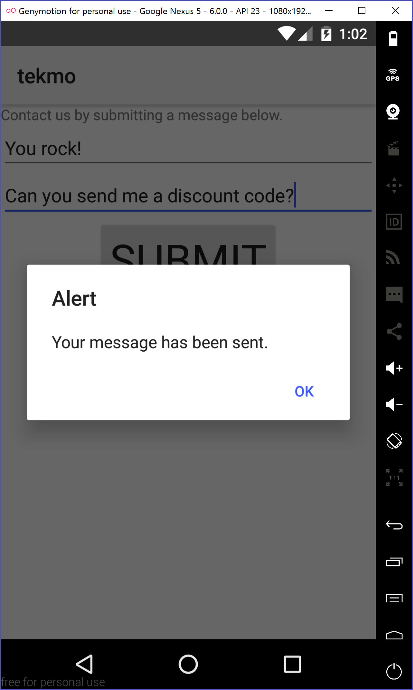
The dialog module's default alert window is OK, but what if you want something a little more customized? That's actually pretty easy.
Exercise: Customizing the alert dialog
By default, the dialog module's alert() function takes a string, and it displays the contents of that string in the dialog alert window that appears. The alert() function also takes an options object that allows you to customize the alert title, the message, and the button text. Take a look at the official documentation to learn more about the options object.
Customize the success alert window by replacing the the successful alert in the contact-us-page.js file with one using the options object.
dialogModule.alert({
title: "Thank you!",
message: "We have received your message.",
okButtonText: "Close"
});
Check back in your emulator to see the change take effect.
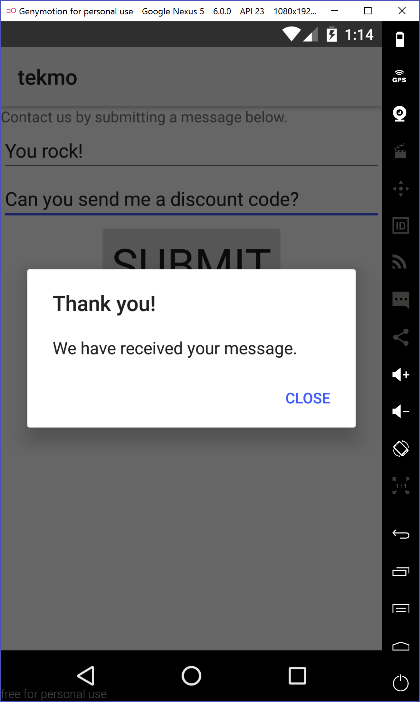
For reference, here is the complete JavaScript code for this chapter.
var httpModule = require("http");
var dialogModule = require("ui/dialogModule");
var page;
function onLoaded(args) {
page = args.object;
}
exports.onLoaded = onLoaded;
function onTap() {
console.log("Submitting message...");
// todo: add code to get data out of text field and view, then submit to Tekmo
// step 1: get data out of text field and text view
var subjectElement = page.getViewById("subject");
var messageElement = page.getViewById("message");
var subject = subjectElement.text;
var message = messageElement.text;
console.log(subject);
console.log(message);
// step 2: submit data to Tekmo
var data = JSON.stringify({
"subject": subject,
"message": message
});
httpModule
.request({
url: "https://nstweet.brosteins.com/api/message",
method: "POST",
headers: { "Content-Type": "application/json" },
content: data })
.then(function(response) {
// success
console.log(response.statusCode);
dialogModule.alert({
title: "Thank you!",
message: "We have received your message.",
okButtonText: "Close"
});
}, function(e) {
// error
console.log("Error occurred: " + e);
dialogModule.alert("We couldn't send your message right now. Try again later.");
});
}
exports.onTap = onTap;
Building a complex UI
I've been using the stack layout a lot in the workshop thus far, but it's not from a lack of creativity. The stack layout can hold it's own: it's concise and simple to use. But, sometimes, you need soemthing a little more flexible. After all, the stack layout can only organize UI elements in a stack-like formation: one on top of (or below) another.
In this chapter, we're going to be learning about the grid layout, another layout that allows you to organize your UI using a grid. You'll be learn about the grid layout by bulding out the final page of the Tekmo app: the Products page.
The Products page will have a grid of products listed down the page, with a heading at the top. Each game displayed will show it's name and price. In later chapters, we'll be adding an image for each game.
Building a grid of products
We'll start by building a basic grid, then slowly modifying it to highlight some of the features of the grid layout.
Exercise: Starting fresh
Let's start by clearing out the Products page, adding a scroll view, stack layout, label indicating wiht the text of "Our Products". I'll let you try this by yourself. If you get stuck, you can follow along below or reference the previous exercises.
Add the <Page>, <ScrollView>, <StackLayout>, and <Label> elements to the products-page.xml file.
<Page>
<ScrollView>
<StackLayout>
<Label text="Our Products" />
</StackLayout>
</ScrollView>
</Page>
Almost automatically, I start most of my NativeScript pages with a scroll view and stack layout. it's always a good starting point, because I'm likely to have scrolling content and the need to stack UI elements on top of each other.
After adding these elements, your page should like like so:
Right now, you may be a bit confused and wondering where the grid layout is going to go. We've already added a stack layout, so how can I add a grid layout. Here's the secret (although it's not such a big secret): you can nest layouts. So, we'll be adding the grid layout right below the label. THinking through the page's overall layout, it will begin with UI elemnts being organized in a vertical stack, then after the top label, we'll be organizing elements with a grid.
It might be hard to visualize right now, but once you get the code in and running in your emulator, it'll be come clearer.
Exercise: Adding a grid layout
Tekmo has 6 vintage games that it sells:
- Super Marshmallow Man
- Couch Commander
- Mummy Madness
- Pyro Robots
- Rescue Pups
- Vampire Valkyrie
Let's plan on having the games displayed in a 2 x 3 grid, 2 columns wide, and 3 rows high.
Add a <GridLayout> ... </GridLayout> element beneath the label in the products-page.xml file. When you add a grid layout, you need to plan for the number of rows and columns, so we'll also declare the grid layout to support 3 rows and 2 columns. Finally, I'm going to lock down the size of the grid layout to be 300 pixels wide by 450 pixels tall.
<GridLayout rows="*,*,*" columns="*,*" width="300" height="450">
</GridLayout>
Grid rows and columns are defined by adding comma-separated values to the rows and columns properties of the grid layout. Each comma-separated value represents a row or column. As you can see, rows="*,*,*" and columns="*,*" means the grid has 3 rows and 2 columns, totaling to 6 grid cells.
The grid layout can be both simple and yet complex depending upon how to define the number of rows and columns. It's possible to specify the size of rows and columns by an exact pixel value, a proportion of the grid space, and proportionately to the size of other rows and columns. I'm not going to go into the details of how to do all of these things here. If you're interested in the details, I cover this topic in great detail in NativeScript in Action.
So, what do the stars really mean? It's a bit complicated, but the simple answer is that each row and column will be distributed evenly over the grid layout's size. So, with 3 rows and a height of 450 pixels, each row will be 150 pixels tall. This also means the 2 columns are evenly distributed over the 300 pixels of width, resulting in columns with a width of 150 pixels.
Putting it together, we have 6 grid cells, each 150 x 150 pixels in width and height. Funny how that worked out perfectly, right?
You won't be able to see this layout until we add content to the grid layout, so let's press forward.
Exercise: Adding content to a grid layout
As I said before, I want a game title and price listed for each game. Thinking aloud, this sounds a lot like two separate UI elements, perhaps even two labels for each game. Do you know of any ways to organize multiple UI elements? Oh that's right: a stack layout.
I'm goign to let you try this next step on your own. Add 6 stack layouts to the grid layout. Each stack layout will have 2 labels inside: a label for the game's name, and a label for the game's price. Here's the game names and prices to use. If you get stuck, follow along below, but try to do this from memory (or look back at a previous exercise).
Tekmo has 6 vintage games that it sells:
- Super Marshmallow Man, $34.99
- Couch Commander, $24.99
- Mummy Madness, $32.99
- Pyro Robots, $19.99
- Rescue Pups, $9.99
- Vampire Valkyrie, $21.99
Add Super Marshmallow Man to the grid layout, by placing two <Label> elements inside of a <StackLayout> that is nested underneath the GridLayout.
<StackLayout>
<Label text="Super Marshmallow Man" textWrap="true" />
<Label text="$34.99" />
</StackLayout>
Add the remaining in the same way.
<StackLayout>
<Label text="Couch Commander" textWrap="true" />
<Label text="$24.99" />
</StackLayout>
<StackLayout>
<Label text="Mummy Madness" textWrap="true" />
<Label text="$32.99" />
</StackLayout>
<StackLayout>
<Label text="Pyro Robots" textWrap="true" />
<Label text="$19.99" />
</StackLayout>
<StackLayout>
<Label text="Rescue Pups" textWrap="true" />
<Label text="$9.99" />
</StackLayout>
<StackLayout>
<Label text="Vampire Valkyrie" textWrap="true" />
<Label text="$21.99" />
</StackLayout>
Let's checkout the products page in your emulator and see the results.
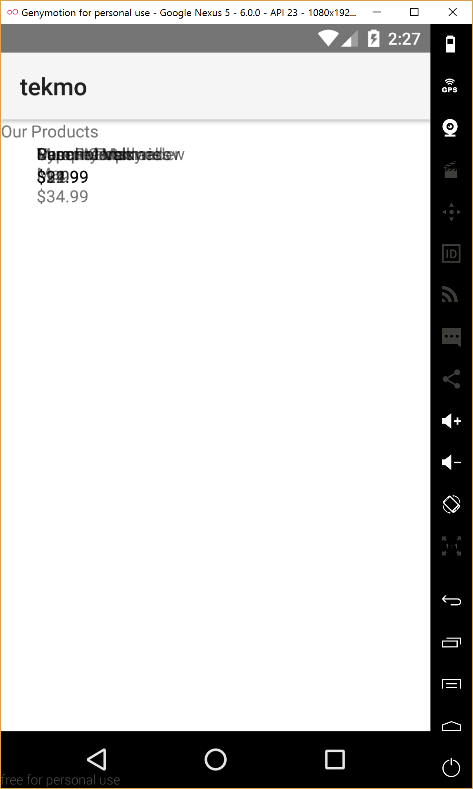
Oh dear! What the heck happened?
It looks like each stack layout is positioned on top of each other. What did we forget?
NOTE: UI elements in a grid layout need to specify which row and column they belong to.
Exercise: Positioning elmenets in a grid layout
Let's fix this problem by assigning a row and col property to each stack layout. The updated stack layouts should look like this:
<StackLayout row="0" col="0">
<Label text="Super Marshmallow Man" textWrap="true" />
<Label text="$34.99" />
</StackLayout>
<StackLayout row="0" col="1">
<Label text="Couch Commander" textWrap="true" />
<Label text="$24.99" />
</StackLayout>
<StackLayout row="1" col="0">
<Label text="Mummy Madness" textWrap="true" />
<Label text="$32.99" />
</StackLayout>
<StackLayout row="1" col="1">
<Label text="Pyro Robots" textWrap="true" />
<Label text="$19.99" />
</StackLayout>
<StackLayout row="2" col="0">
<Label text="Rescue Pups" textWrap="true" />
<Label text="$9.99" />
</StackLayout>
<StackLayout row="2" col="1">
<Label text="Vampire Valkyrie" textWrap="true" />
<Label text="$21.99" />
</StackLayout>
Let's check if that fixed the issue in our emulator.
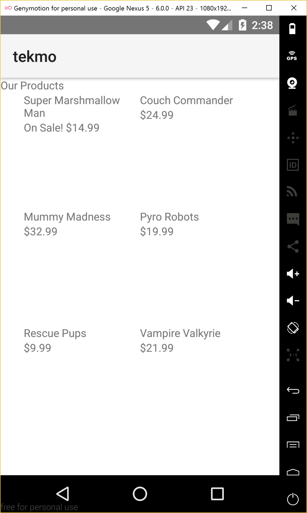
Yep, it did. But it's really hard to tell where each grid cell begins and ends. I can kind of tell that it's in a grid, but it's not really clear.
Let's fix that by cheating a little bit. You won't learn aobut this for a few more chapters, but it's worth doing now to make it easier to see.
Add an alternating CSS style to each stack layout, so we can see the grid cells better.
WARNING: Yeha, I said add a CSS style. NativeScript isn't HTML, but a subset of CSS can be used to style your apps. You'll learn more later, so just follow along for now.
<StackLayout row="0" col="0" style="background-color: #EEEEEE;">
<Label text="Super Marshmallow Man" textWrap="true" />
<Label text="$34.99" />
</StackLayout>
<StackLayout row="0" col="1" style="background-color: #CCCCCC;">
<Label text="Couch Commander" textWrap="true" />
<Label text="$24.99" />
</StackLayout>
<StackLayout row="1" col="0" style="background-color: #CCCCCC;">
<Label text="Mummy Madness" textWrap="true" />
<Label text="$32.99" />
</StackLayout>
<StackLayout row="1" col="1" style="background-color: #EEEEEE;">
<Label text="Pyro Robots" textWrap="true" />
<Label text="$19.99" />
</StackLayout>
<StackLayout row="2" col="0" style="background-color: #EEEEEE;">
<Label text="Rescue Pups" textWrap="true" />
<Label text="$9.99" />
</StackLayout>
<StackLayout row="2" col="1" style="background-color: #CCCCCC;">
<Label text="Vampire Valkyrie" textWrap="true" />
<Label text="$21.99" />
</StackLayout>
Now, let's check your emulator.
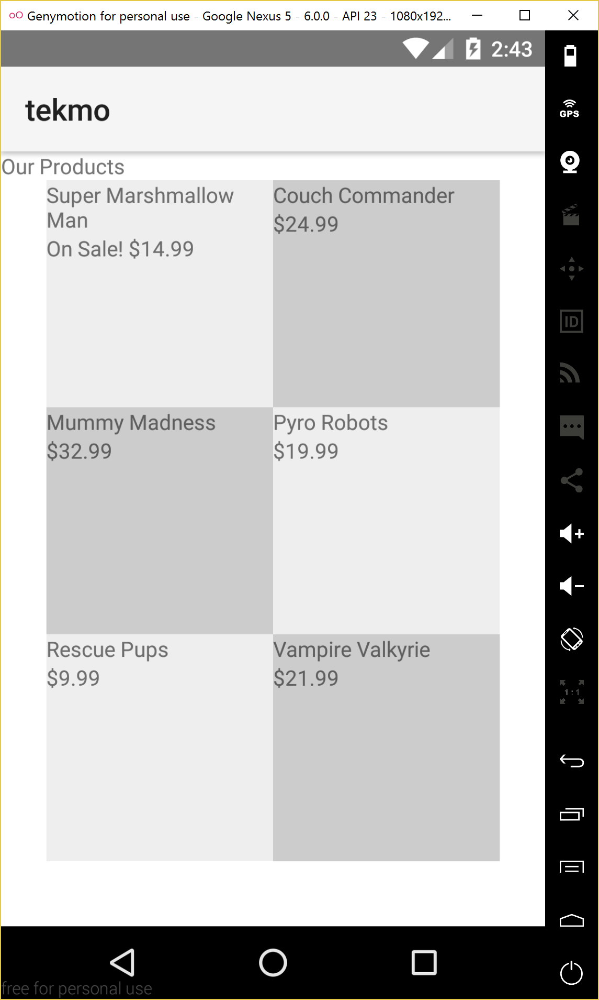
Much better! You can really see the grid now.
For reference, here's the complete code listing for the Products page.
<Page>
<ScrollView>
<StackLayout>
<Label text="Our Products" />
<GridLayout rows="*,*,*" columns="*,*" width="300" height="450">
<StackLayout row="0" col="0" style="background-color: #EEEEEE;">
<Label text="Super Marshmallow Man" textWrap="true" />
<Label text="$34.99" />
</StackLayout>
<StackLayout row="0" col="1" style="background-color: #CCCCCC;">
<Label text="Couch Commander" textWrap="true" />
<Label text="$24.99" />
</StackLayout>
<StackLayout row="1" col="0" style="background-color: #CCCCCC;">
<Label text="Mummy Madness" textWrap="true" />
<Label text="$32.99" />
</StackLayout>
<StackLayout row="1" col="1" style="background-color: #EEEEEE;">
<Label text="Pyro Robots" textWrap="true" />
<Label text="$19.99" />
</StackLayout>
<StackLayout row="2" col="0" style="background-color: #EEEEEE;">
<Label text="Rescue Pups" textWrap="true" />
<Label text="$9.99" />
</StackLayout>
<StackLayout row="2" col="1" style="background-color: #CCCCCC;">
<Label text="Vampire Valkyrie" textWrap="true" />
<Label text="$21.99" />
</StackLayout>
</GridLayout>
</StackLayout>
</ScrollView>
</Page>
Refactoring for a special promotion
I could stop here with the grid layout, but that wouldn't be much fun. Let's do one more thing.
After talking with Tekmo, I've jsut realized that want to highlight Super Marshmallow Man, by placing it front and center on the Products page. Right now it's lost a little bit. Tekmo woudl like a larger tile at the top of the page, highlighting Super Marshmallow Man. The tile should have a brief description of the game while also advertizing a sale price of $14.99: $20 off!
Exercise: Spanning grid cells
The grid layout is a flexible layout because you can also have UI elements span multiple rows and columns by using the rowSpan and colSpan properties.
Set the Super Marshmallow Man tile to span two columns by using the colSpan="2" property.
<StackLayout row="0" col="0" colSpan="2" style="background-color: #EEEEEE;">
<Label text="Super Marshmallow Man" textWrap="true" />
<Label text="$34.99" />
</StackLayout>
Because the Super Marshmallow Man tile is now spanning two columns, it will be consuming the second column of the first row. We need to make a number of changes to the rest of the grid to support this:
- add a fourth row to the grid
- increase the height from 450 pixels to 600 pixels to support the 4th row
- shift the remaining stack layouts
- color the Super Marshmallow Man tile slightly differently to make it easier to see
Add the fourth row by changing the rows attribute of the grid layout to include a 4th row.
<GridLayout rows="*,*,*,*" columns="*,*" width="300" height="450">
...
</GridLayout>
Increase the height of the grid from 450 pixels to 600 pixels.
<GridLayout rows="*,*,*,*" columns="*,*" width="300" height="600">
...
</GridLayout>
Shift the remaining stack layouts.
<StackLayout row="1" col="0" style="background-color: #CCCCCC;">
<Label text="Couch Commander" textWrap="true" />
<Label text="$24.99" />
</StackLayout>
<StackLayout row="1" col="1" style="background-color: #EEEEEE;">
<Label text="Mummy Madness" textWrap="true" />
<Label text="$32.99" />
</StackLayout>
<StackLayout row="2" col="0" style="background-color: #EEEEEE;">
<Label text="Pyro Robots" textWrap="true" />
<Label text="$19.99" />
</StackLayout>
<StackLayout row="2" col="1" style="background-color: #CCCCCC;">
<Label text="Rescue Pups" textWrap="true" />
<Label text="$9.99" />
</StackLayout>
<StackLayout row="3" col="0" style="background-color: #CCCCCC;">
<Label text="Vampire Valkyrie" textWrap="true" />
<Label text="$21.99" />
</StackLayout>
Change the color of the Super Marshmallow Man tile.
<StackLayout row="0" col="0" colSpan="2" style="background-color: #DDDDDD;">
<Label text="Super Marshmallow Man" textWrap="true" />
<Label text="$34.99" />
</StackLayout>
Finally, let's add a brief description of the game to the Super Marshmallow Man tile.
<StackLayout row="0" col="0" colSpan="2" style="background-color: #DDDDDD;">
<Label text="Super Marshmallow Man" textWrap="true" />
<Label textWrap="true" text="Escape from certain death int his wild adventure!" />
<Label text="$34.99" />
</StackLayout>
Let's check out what this looks like in our emulator.
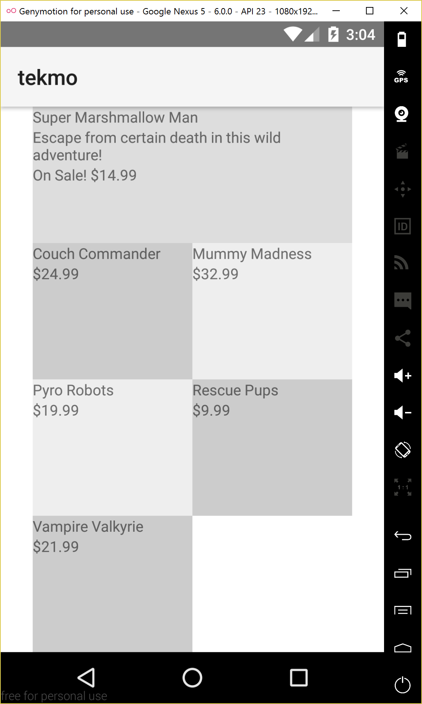
Looks great!
Here's the complete code listing for the products-page.xml file as of the end of this chapter.
<Page>
<ScrollView>
<StackLayout>
<Label text="Our Products" />
<GridLayout rows="*,*,*,*" columns="*,*" width="300" height="600">
<StackLayout row="0" col="0" colSpan="2" style="background-color: #DDDDDD;">
<Label text="Super Marshmallow Man" textWrap="true" />
<Label textWrap="true" text="Escape from certain death int his wild adventure!" />
<Label text="$34.99" />
</StackLayout>
<StackLayout row="1" col="0" style="background-color: #CCCCCC;">
<Label text="Couch Commander" textWrap="true" />
<Label text="$24.99" />
</StackLayout>
<StackLayout row="1" col="1" style="background-color: #EEEEEE;">
<Label text="Mummy Madness" textWrap="true" />
<Label text="$32.99" />
</StackLayout>
<StackLayout row="2" col="0" style="background-color: #EEEEEE;">
<Label text="Pyro Robots" textWrap="true" />
<Label text="$19.99" />
</StackLayout>
<StackLayout row="2" col="1" style="background-color: #CCCCCC;">
<Label text="Rescue Pups" textWrap="true" />
<Label text="$9.99" />
</StackLayout>
<StackLayout row="3" col="0" style="background-color: #CCCCCC;">
<Label text="Vampire Valkyrie" textWrap="true" />
<Label text="$21.99" />
</StackLayout>
</GridLayout>
</StackLayout>
</ScrollView>
</Page>
Styling your app
We've spent a lot of time working through the declarative UI elements of a NativeScript app so far. But now it's time to turn back to the styling of the UI. I'll be frank. This app looks pretty bad right now. But, with a few tweaks, we can make it better. I can't promise it'll be the next Mona Lisa, but it will be better.
Styling NativeScript apps is similar to how you may style an HTML application: CSS. That's right, you can use CSS to style your NativeScript app pages.
If you recall from earlier chapters, a NativeScript page has three parts: an XML file, a JavaScript file, and a CSS file. The XML file contains declarative XML code used to structure your app; the JavaScript file contains your business logic code that can interact with your UI; and the CSS file augments the XML file, providing style.
NOTE: There is no right or wrong way to style this app we're working with (well, maybe there are some wrong ways...). I'm not a great UI designer, I'm much more of a backend architect and automation developer, so don't take any of my UI styling guidelines here as gospel. If you think something looks better by styling it differently, by all means, do it. If you're esepcially proud of something, share it with the community.
Styling basics
Let's get started with some styling basics. Because we're using the Android platform in our workshop, there's something fairly obvious that we need to fix right away. At the top of every page, there's a large area with the app's name tekmo displayed. This area is called the Action Bar. We need to remove the action bar and we need to do it fast!
NOTE: If you're running the workshop in iOS, this excercise doesn't apply to you, so feel free to skip it.
Exercise: Removing the Android action bar
To remove the action bar, add the actionBarHidden="true" attribute of the <Page> element. Add thsi to each page declaration in your XML files.
Starting with home-page.xml, add the attribute to the <Page> element.
<Page actionBarHidden="true">
...
</Page>
As you can see, the action bar has been removed from the top of the app.
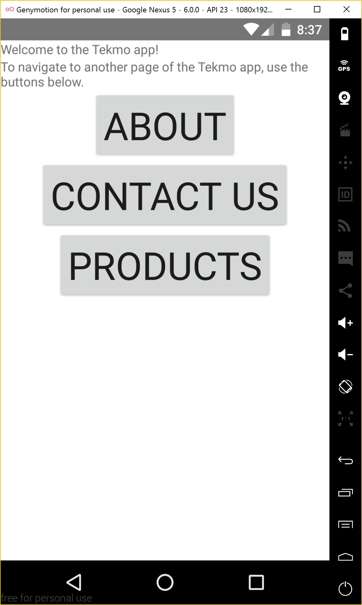
Do the same thing for the remainder of the pages within the Tekmo app:
- About
- Contact use
- Products
Let's take a breif detour and talk about the various CSS files in your project. There are two types of CSS files in a NativeScript app:
- global (app.css)
- page-specific (page-name.css)
The app.css file is global to your entire app, so changes you make in the app.css file will apply to every page in your app.
If you need finer-grained control over your style, then you can ceate page-specific CSS files. These files are named similarly to the XML and JavaScript files, just with a different extension.
The beauty of NativeScript CSS styles is that you don't have to remember to include references to your style files on your pages. NativeScript will automatically load the files for you (as long as they're named per the page-naming conventions we've discussed above.)
Inline style application
In addition to applying styles by using CSS files, you can apply styles directly to UI elements. You've seen this before when we applied the various background colors to grid cells on the Products page of the Tekmo app. See the NativeScript inline styling documentation for more information.
Supported CSS properties
As I've said before, NativeScript styling is a subset of CSS styling, meaning that not every CSS property is available. For a detailed list of supported properties, check out the official NativeScript documentation on CSS and styling.
CSS selectors
Just as in HTML applications, NativeScript can use CSS selectors to select a single element by id, a group of items by element tag name, a group of elements by class name, and a few other methods. To see the complete listing, check out the NativeScript styling documentation. I'm going to stick with the basic (id, class name, and XML tag name) in the workshop, but you're free to explore further on your own.
With this basic knowledge, let's get started styling our app with CSS.
NOTE: This is where the power of LiveSync really shines. Constant tweaks to page styling is made easy if you're using LiveSync.
Exercise: Styling titles and text
Another piece of low-hanging fruit is styling the titles on pages and the general purpose text we have on each page. Let's start with the titles.
I'd like to make the page titles larger and centerd on pages, when they're present. Because titles appear on multiple pages, it makes sense to place a single CSS style rule in the app.css file for titles.
Let's look in the app.css file to get started. You'll notice that the default app template for NativeScript apps already includes some CSS for elements with the title class.
.title {
font-size: 30;
horizontal-align: center;
margin: 20;
}
We don't need to tweek the settings, so let's go through and apply the title class to the following pages. You can do this by adding a class="title" property to the <Label> elements that should be considered titles:
- Home
- About
- Contact Us
- Products
After changing the various pages now have a prominent title with ample rooms between the title and the following page content.
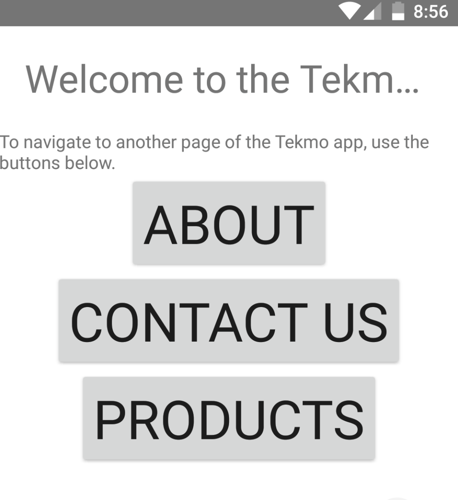
I see a few things that should also be changed:
- fix home page title text wrapping
- adjust normal text to give a bit of a left/right/botton margin (app-wide)
- add sub-title class for sub titles on the About page
- shrink the buttons - they're HUGE
I'm going to walk through these changes, but go ahead and try this on your own.
Fix the home page text wrapping. (I chose to enable text wrapping and shorten the text.)
<Label textWrap="true" text="Welcome to Tekmo!" />
Add a left, right, and bottom margin to all text by styling all labels to have a margin of 10 pixels. (I added this to the app.css file to make the change globally.) While
Label {
margin-left: 10;
margin-right: 10;
margin-bottom: 10;
}
Add a sub-title class for sub-titled text (especially on the About page).
.sub-title {
font-size: 20;
}
Add the .sub-title class name to the sub titles on the About page.
<Label text="Our Mission" class="sub-title" />
<Label text="History" class="sub-title" />
Change the button selector definition in the global app.css file to make the buttons appear more reasonably-sized.mI couldn't decide what the right font size for buttons was, so I just removed the button font-size property.
button {
horizontal-align: center;
}
It looks a little better now.
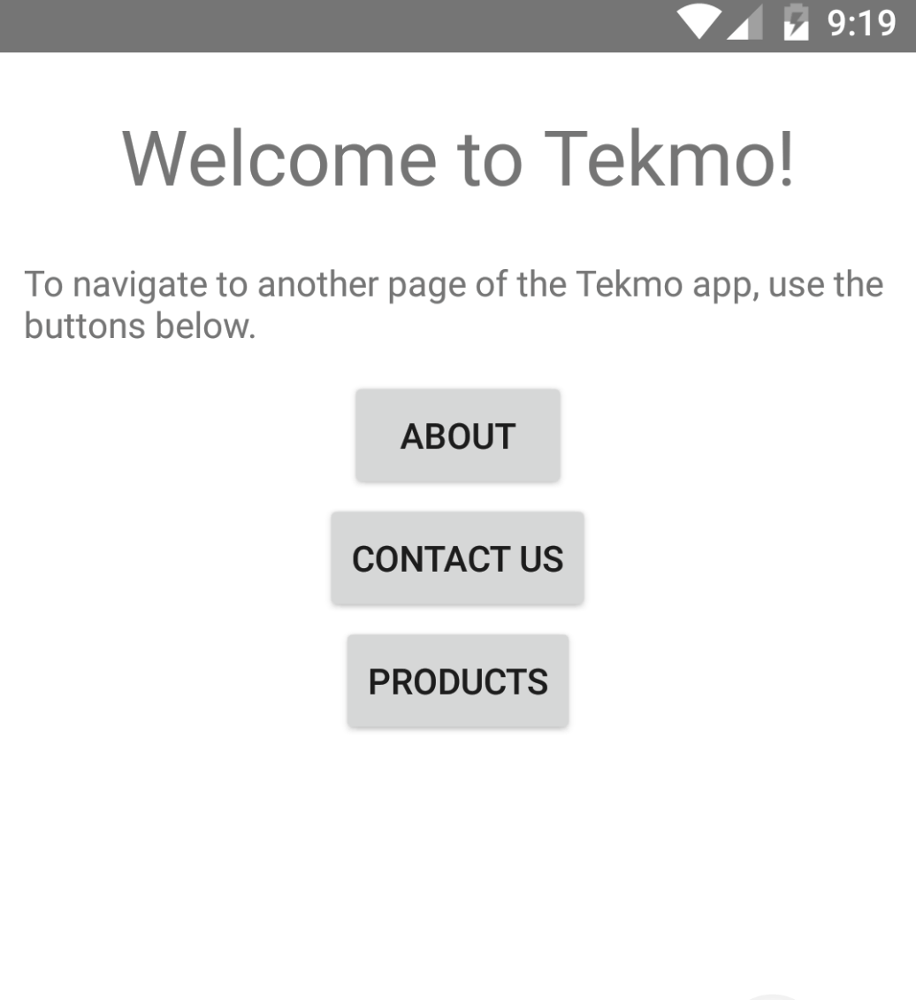
Styling a grid layout
Next, let's turn our attention to the Products page. It looks pretty bad right now.
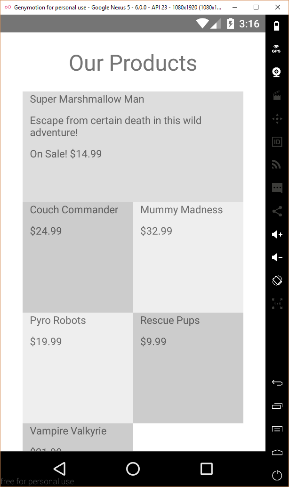
As you'll recall the Products page is organized using a grid layout. Styling grid layouts isn't much different than styling other UI elements, so let's dive in.
Exercise: Styling a grid layout
I'd like to do a few things to clean up the Products page and the rest of the app:
- give all app pages a default background color instead of white
- remove the alternating tile colors
- color the tiles white and put some space between them, so we can visually tell where one tile ends and another begins
- put a band of color across the top of each tile for the title
- style the tile titles to stand out against the solid tile background
- right-align the price and give it color to stand out
- style the highlighted product a little different from the other tiles to make it stand out
That's a lot of changes. Feel free to try the changes on your own, or follow along with me. If your end product doesn't look exactly liek mine, that's OK.
Let's start by giving all app pages a default background color instead of white. Add a background-color property to the app.css file.
Page {
background-color: EFEFEF;
}
Remove the alternating tile backgrounds from the Products page by deleting the inline style attributes from each stack layout in the grid layout. The grid layout should look like this:
<GridLayout rows="*,*,*,*" columns="*,*" width="300" height="600">
<StackLayout row="0" col="0" colSpan="2">
<Label text="Super Marshmallow Man" textWrap="true" />
<Label textWrap="true" text="Escape from certain death int his wild adventure!" />
<Label text="$34.99" />
</StackLayout>
<StackLayout row="1" col="0">
<Label text="Couch Commander" textWrap="true" />
<Label text="$24.99" />
</StackLayout>
<StackLayout row="1" col="1">
<Label text="Mummy Madness" textWrap="true" />
<Label text="$32.99" />
</StackLayout>
<StackLayout row="2" col="0">
<Label text="Pyro Robots" textWrap="true" />
<Label text="$19.99" />
</StackLayout>
<StackLayout row="2" col="1">
<Label text="Rescue Pups" textWrap="true" />
<Label text="$9.99" />
</StackLayout>
<StackLayout row="3" col="0">
<Label text="Vampire Valkyrie" textWrap="true" />
<Label text="$21.99" />
</StackLayout>
</GridLayout>
The Products page should look pretty plain now:
Set the background color of the tiles to white and put some space in between the tiles so we can tell where one tile ends and another begins. I chose to set this in a page-specific CSS file because the tiles are specific to the Products page. Create a file named products-page.css file first, then add the tile class selector properties.
.tile {
background-color: #FFFFFF;
margin: 5;
}
Apply the tile class to each of the stack layouts.
<GridLayout rows="*,*,*,*" columns="*,*" width="300" height="600">
<StackLayout row="0" col="0" colSpan="2" class="tile">
<Label text="Super Marshmallow Man" textWrap="true" />
<Label textWrap="true" text="Escape from certain death int his wild adventure!" />
<Label text="$34.99" />
</StackLayout>
<StackLayout row="1" col="0" class="tile">
<Label text="Couch Commander" textWrap="true" />
<Label text="$24.99" />
</StackLayout>
<StackLayout row="1" col="1" class="tile">
<Label text="Mummy Madness" textWrap="true" />
<Label text="$32.99" />
</StackLayout>
<StackLayout row="2" col="0" class="tile">
<Label text="Pyro Robots" textWrap="true" />
<Label text="$19.99" />
</StackLayout>
<StackLayout row="2" col="1" class="tile">
<Label text="Rescue Pups" textWrap="true" />
<Label text="$9.99" />
</StackLayout>
<StackLayout row="3" col="0" class="tile">
<Label text="Vampire Valkyrie" textWrap="true" />
<Label text="$21.99" />
</StackLayout>
</GridLayout>
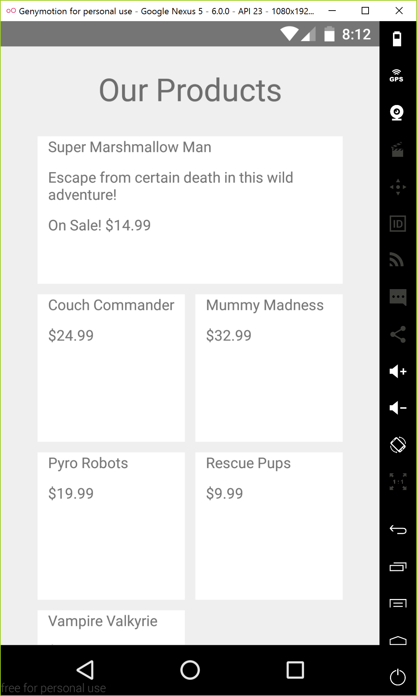
Add a band of color across the top of each tile, and place the tile title inside of the band. To do this, I wrapped the title with anoter stack layout, added the title class to the stack layout, and set the background color of the stack layout.
<GridLayout rows="*,*,*,*" columns="*,*" width="300" height="600">
<StackLayout row="0" col="0" colSpan="2" class="tile">
<StackLayout class="tile-title">
<Label text="Super Marshmallow Man" textWrap="true" />
</StackLayout>
<Label textWrap="true" text="Escape from certain death int his wild adventure!" />
<Label text="$34.99" />
</StackLayout>
<StackLayout row="1" col="0" class="tile">
<StackLayout class="tile-title">
<Label text="Couch Commander" textWrap="true" />
</StackLayout>
<Label text="$24.99" />
</StackLayout>
<StackLayout row="1" col="1" class="tile">
<StackLayout class="tile-title">
<Label text="Mummy Madness" textWrap="true" />
</StackLayout>
<Label text="$32.99" />
</StackLayout>
<StackLayout row="2" col="0" class="tile">
<StackLayout class="tile-title">
<Label text="Pyro Robots" textWrap="true" />
</StackLayout>
<Label text="$19.99" />
</StackLayout>
<StackLayout row="2" col="1" class="tile">
<StackLayout class="tile-title">
<Label text="Rescue Pups" textWrap="true" />
</StackLayout>
<Label text="$9.99" />
</StackLayout>
<StackLayout row="3" col="0" class="tile">
<StackLayout class="tile-title">
<Label text="Vampire Valkyrie" textWrap="true" />
</StackLayout>
<Label text="$21.99" />
</StackLayout>
</GridLayout>
Add the style to the page-specific CSS file:
.tile-title {
background-color: #99ccff;
}
NOTE: There are likely other ways of adding a band of color around a label, but this was a quick way to get what I wanted accomplished.
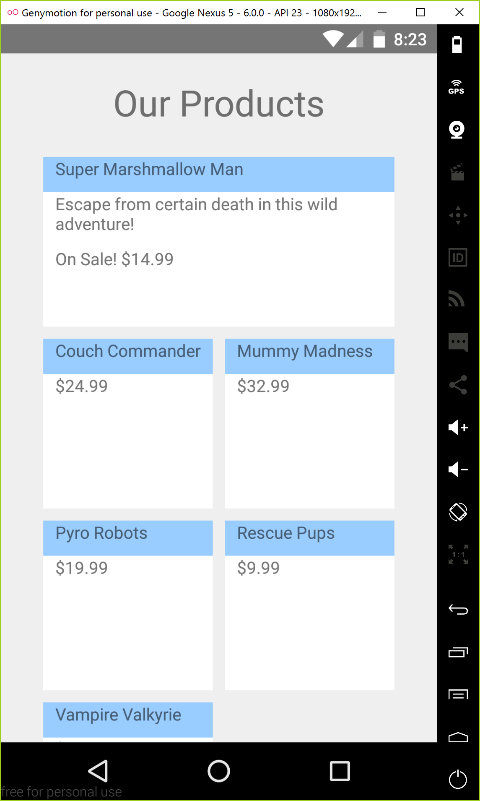
Change the tile titles a little to increase the font size, set the color to black, and increase top margin by a few pixels. This shoudl also be added to the products-page.css file.
.tile-title Label {
font-size: 14;
color: black;
margin-top: 5;
}
Make the price stand out a bit more by changing the color and right-aligning it within the stack layout. This CSS addition can also go in the products-page.css file.
.price {
color: #009933;
text-align: right;
}
Target the prices by adding a price class to each pricing label on the Products page.
<GridLayout rows="*,*,*,*" columns="*,*" width="300" height="600">
<StackLayout row="0" col="0" colSpan="2" class="tile">
<StackLayout class="tile-title">
<Label text="Super Marshmallow Man" textWrap="true" />
</StackLayout>
<Label textWrap="true" text="Escape from certain death int his wild adventure!" />
<Label text="$34.99" class="price" />
</StackLayout>
<StackLayout row="1" col="0" class="tile">
<StackLayout class="tile-title">
<Label text="Couch Commander" textWrap="true" />
</StackLayout>
<Label text="$24.99" class="price" />
</StackLayout>
<StackLayout row="1" col="1" class="tile">
<StackLayout class="tile-title">
<Label text="Mummy Madness" textWrap="true" />
</StackLayout>
<Label text="$32.99" class="price" />
</StackLayout>
<StackLayout row="2" col="0" class="tile">
<StackLayout class="tile-title">
<Label text="Pyro Robots" textWrap="true" />
</StackLayout>
<Label text="$19.99" class="price" />
</StackLayout>
<StackLayout row="2" col="1" class="tile">
<StackLayout class="tile-title">
<Label text="Rescue Pups" textWrap="true" />
</StackLayout>
<Label text="$9.99" class="price" />
</StackLayout>
<StackLayout row="3" col="0" class="tile">
<StackLayout class="tile-title">
<Label text="Vampire Valkyrie" textWrap="true" />
</StackLayout>
<Label text="$21.99" class="price" />
</StackLayout>
</GridLayout>
Lastly, let's slightly change the hightlighted tile a bit to make it stand apart from the other tiles. Add the following CSS selectors to the product-page.css file.
.highlight .tile-title {
font-weight: bold;
background-color: #6699ff;
}
.highlight .tile-title Label {
font-size: 18;
}
.hightlight .price {
font-weight: bold;
color: red;
}
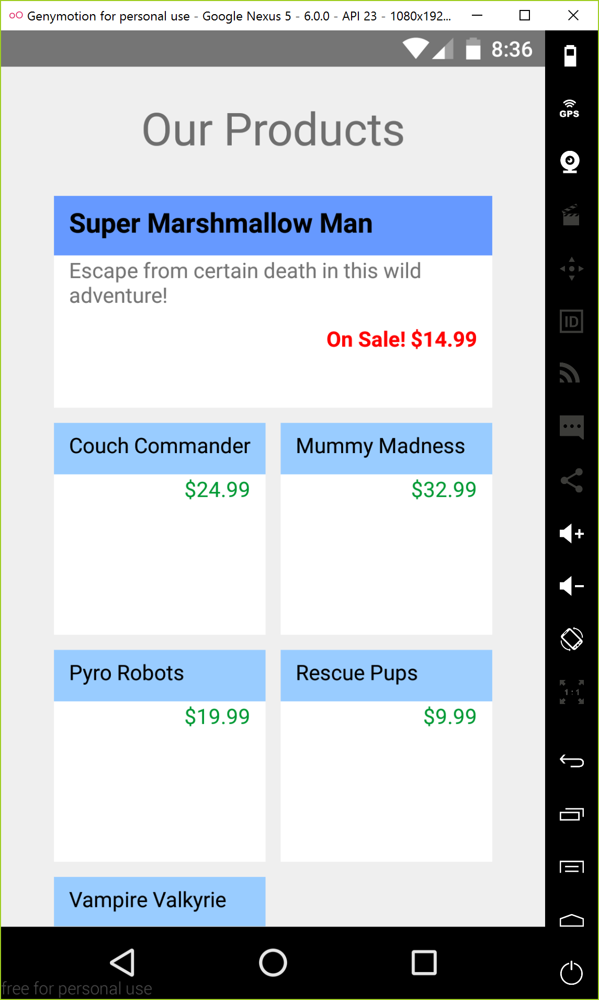
That's a pretty radical change, and it wasn't too hard to do. Again, you're likely more creative than I am, so go forth and be artistic.
Adding images
In the final part of this chapter, you'll learn how to include images in your NativeScript app. Images and graphics can help turn a "blah" UI into something beautiful. Again, I don't have the talent to do "beautiful", but I'll teach you the basic tools of including images in your app. From there, you can run wild.
Challenges in displaying images on mobile devices
Before we start, I want to share some of the challenges ther are with displaying images on mobile devices. First, consider the job of a cross-platform mobile framework (like NativeScript).
WARNING: This section may scare you initially, and that's because cross-platform device DPIs are confusing. But don't worry: NativeScript does a good job of abstracting away the complexities of cross-platform images. Stick with me!
There are hundreds of various devices, and each device has a different screen resolution and DPI. Let's take iOS devices as an example. Apple's devices (iPhone, iPad, etc.) are considered to be a highly-controlled hardware ecosystem, resulting in fewer variances across the models of their devices; however, consider just the iPhone line of hardware. iPhone 3, 3G, 4, 4s, 5, 5s, 5c, 6, 6s, 6 plus, etc. Some of these devies share common characteristics (like screen size), but it seems with every new year, the screens change in size, or in DPI. Between all of these devices, there are 3-4 differetn screen sizes, and 2-3 different screen DPIs to consider.
That's only iOS, the most "controlled" device ecosystem. Android has similar differences, but it's across a much larger variable hardware space.
I don't want to paint a doom-and-gloom picture for you. There are very well-defined guidelines for displaying images on both iOS and Android platforms, but the true chalenge is that the platforms are different.
So, what does this mean for you? Unfortunately, a lot. As a cross-platform mobile developer, you should become familiar with the differences in screen DPI and how to create images for the various screen. I'm not going into those differences here, but you can find out more in these places:
- Android screen resolution documentation
- iOS screen resolution documentation
- NativeScript image documentation
- my website for building NativeScript images
Displaying images in a NativeScript app
There are several ways to display images in a NativeScript app:
- from a url
- from the device's file system
- embdedded in the app as a resource
In this workshop, you'll be learning how to display images embedded in the app as a resource. The other methods are similar, so I'll let you explore them on your own by reading the NativeScript docs.
Why NativeScript makes images easy
Just in case you haven't had a chance to read the Android and iOS image/screen DPI docs above, I'll briefly summarize for you.
Imagine you have a static in-app image named picture.png that you'd like to display on devices (Android and iOS). For Android, you'd need to provide 6 different image resolutions, nick-named:
- ldpi (0.75x original resolution)
- mdpi (1.0x)
- hdpi (1.5x)
- xhdpi (2.0x)
- xxhdpi (3.0x)
- xxxhdpi (4.0x)
On iOS, you'd need to provide 3 image sizes:
- @1x (1.0x original resolution, iPad 2 and iPad mini)
- @2x (2.0x, iPhone 4s, iPhone 5, iPhone 6, iPad [retina])
- @3x (3.0x, iPhone 6 Plus)
So, you need 9 total images to cover all the bases...ugh! But, I've already solved that problem for you with my website, NativeScript Image Builder. If you have a high-resolution image for your app, upload it to my site and I'll do all of the image building magic for you and ship the images back to you in a .ZIP file.
You can't get away from creating all the various image sizes, but there is a declarative way to load the image once, and have NativeScript automatically display the correct image based upon your device and platform.
Enough explaination, let's start adding some images to the app.
Exercise: Adding images to the products page
The first thing we need is images for each game. My friend David Bjarnson, was kind enough to draw up some quick images for each game.
Download the app images and unzip the contents. Inside, you'll find 2 folders: Android and iOS. Copy the contents of these folders into the app/Resoures/Android and app/Resources/iOS folder of the Tekmo mobile app.
You can checkout each of the images by clicking on them in VS Code:


Add them to the products page by using the <Image /> element.
<GridLayout rows="*,*,*,*" columns="*,*" width="300" height="600">
<StackLayout row="0" col="0" colSpan="2" class="tile">
<StackLayout class="tile-title">
<Label text="Super Marshmallow Man" textWrap="true" />
</StackLayout>
<Image src="res://smm" />
<Label textWrap="true" text="Escape from certain death int his wild adventure!" />
<Label text="$34.99" class="price" />
</StackLayout>
<StackLayout row="1" col="0" class="tile">
<StackLayout class="tile-title">
<Label text="Couch Commander" textWrap="true" />
</StackLayout>
<Image src="res://cc" />
<Label text="$24.99" class="price" />
</StackLayout>
<StackLayout row="1" col="1" class="tile">
<StackLayout class="tile-title">
<Label text="Mummy Madness" textWrap="true" />
</StackLayout>
<Image src="res://mm" />
<Label text="$32.99" class="price" />
</StackLayout>
<StackLayout row="2" col="0" class="tile">
<StackLayout class="tile-title">
<Label text="Pyro Robots" textWrap="true" />
</StackLayout>
<Image src="res://pr" />
<Label text="$19.99" class="price" />
</StackLayout>
<StackLayout row="2" col="1" class="tile">
<StackLayout class="tile-title">
<Label text="Rescue Pups" textWrap="true" />
</StackLayout>
<Image src="res://rp" />
<Label text="$9.99" class="price" />
</StackLayout>
<StackLayout row="3" col="0" class="tile">
<StackLayout class="tile-title">
<Label text="Vampire Valkyrie" textWrap="true" />
</StackLayout>
<Label text="$21.99" class="price" />
</StackLayout>
</GridLayout>
Also adjust the image width and height to a reasonable size on the emulator scereen.
Image {
width: 80;
height: 80;
}
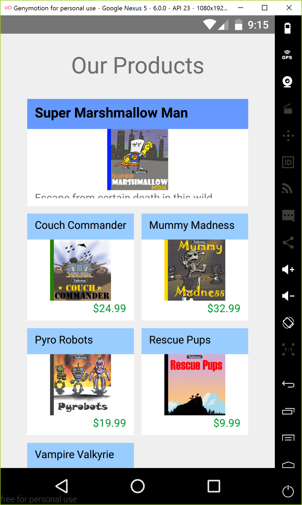
This looks OK, but now the Super Marshmallow Man text and price has fallen out of the tile. Ideally, I'd like the image to be left-aligned, then the description and price right-aligned.
There are a variety of ways to do this. Two ways at the top of my head are to add another grid layout for this tile, or use a series of nested stack layouts. Let's use the stack layout method because it will introduce you to another property of the stack layout: orientation. The orientation property of the stak layout tells NativeScript whether to render the layout's contents vertically or horizontally. By default it is rendered veritcally. Change the Super Marshmallow Man tile's code to add a series of nested stck layouts.
<StackLayout row="0" col="0" colSpan="2" class="tile">
<StackLayout class="tile-title">
<Label text="Super Marshmallow Man" textWrap="true" />
</StackLayout>
<StackLayout orientation="horizontal">
<Image src="res://smm" />
<StackLayout>
<Label textWrap="true" text="Escape from certain death int his wild adventure!" />
<Label text="$34.99" class="price" />
</StackLayout>
</StackLayout>
</StackLayout>
Also increase the size of the highlight image.
.highlight Image {
width: 100;
height 100;
}
Looks good.
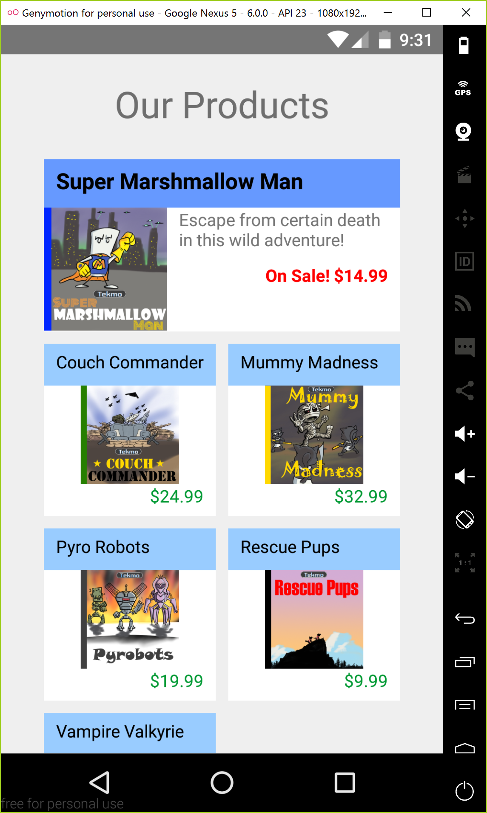
That's all I'm going to tweak for now, but you can continue on your own if you'd like.
This concludes our work on the Tekmo mobile app. It's basic, but thinking back, you've learned a lot with this simple little app.
Your second app
Donec nisi magna, vehicula et purus eget, blandit suscipit tellus. Quisque lobortis augue at fringilla ullamcorper. Integer mattis diam eget augue suscipit, a malesuada mauris bibendum. Phasellus venenatis elit in semper hendrerit. Nunc tincidunt lectus in mauris facilisis, et laoreet metus aliquet. Mauris at hendrerit turpis, at semper mi. Suspendisse vel arcu nulla. Nullam scelerisque consequat molestie. Curabitur sit amet porta odio. Morbi lacinia vel tortor eu fringilla.
Another section
Mauris tempor facilisis accumsan. Mauris vitae iaculis risus. Mauris volutpat suscipit neque non bibendum. Phasellus non fringilla enim. Aliquam tempor quam vel ligula porta convallis. In blandit dictum tempus. Nunc at pulvinar justo. Aliquam eu mi eros. Nunc sit amet tellus non lorem malesuada tempus. Vestibulum nunc magna, varius ut aliquam non, fermentum sodales metus. Aliquam sit amet pulvinar lacus. Sed fringilla placerat tempor. Pellentesque id elementum nibh. Interdum et malesuada fames ac ante ipsum primis in faucibus. Donec laoreet, ex eget vulputate tincidunt, enim nisi ullamcorper urna, at scelerisque tellus mi sit amet nisi. Duis ac risus ac odio efficitur dignissim vitae dapibus purus.
Yet another section
Cras massa nulla, feugiat eu pretium in, tempor nec nulla. Nullam vel lobortis felis. Cras varius iaculis ornare. Ut at nisl sit amet leo pulvinar iaculis non ut purus. Morbi luctus magna sed condimentum cursus. Ut accumsan enim ligula, vitae dapibus odio blandit quis. Sed auctor ex non scelerisque vulputate. Nunc feugiat lobortis nisl consequat consectetur. Vivamus consequat sem id consectetur varius. Nam nec erat id est interdum venenatis eu eu felis. Suspendisse potenti. Donec non sapien in est maximus cursus eget eget nunc. Maecenas congue sapien ut tempor facilisis.
Adding a home page
Donec nisi magna, vehicula et purus eget, blandit suscipit tellus. Quisque lobortis augue at fringilla ullamcorper. Integer mattis diam eget augue suscipit, a malesuada mauris bibendum. Phasellus venenatis elit in semper hendrerit. Nunc tincidunt lectus in mauris facilisis, et laoreet metus aliquet. Mauris at hendrerit turpis, at semper mi. Suspendisse vel arcu nulla. Nullam scelerisque consequat molestie. Curabitur sit amet porta odio. Morbi lacinia vel tortor eu fringilla.
Another section
Mauris tempor facilisis accumsan. Mauris vitae iaculis risus. Mauris volutpat suscipit neque non bibendum. Phasellus non fringilla enim. Aliquam tempor quam vel ligula porta convallis. In blandit dictum tempus. Nunc at pulvinar justo. Aliquam eu mi eros. Nunc sit amet tellus non lorem malesuada tempus. Vestibulum nunc magna, varius ut aliquam non, fermentum sodales metus. Aliquam sit amet pulvinar lacus. Sed fringilla placerat tempor. Pellentesque id elementum nibh. Interdum et malesuada fames ac ante ipsum primis in faucibus. Donec laoreet, ex eget vulputate tincidunt, enim nisi ullamcorper urna, at scelerisque tellus mi sit amet nisi. Duis ac risus ac odio efficitur dignissim vitae dapibus purus.
Yet another section
Cras massa nulla, feugiat eu pretium in, tempor nec nulla. Nullam vel lobortis felis. Cras varius iaculis ornare. Ut at nisl sit amet leo pulvinar iaculis non ut purus. Morbi luctus magna sed condimentum cursus. Ut accumsan enim ligula, vitae dapibus odio blandit quis. Sed auctor ex non scelerisque vulputate. Nunc feugiat lobortis nisl consequat consectetur. Vivamus consequat sem id consectetur varius. Nam nec erat id est interdum venenatis eu eu felis. Suspendisse potenti. Donec non sapien in est maximus cursus eget eget nunc. Maecenas congue sapien ut tempor facilisis.
Adding child pages
Donec nisi magna, vehicula et purus eget, blandit suscipit tellus. Quisque lobortis augue at fringilla ullamcorper. Integer mattis diam eget augue suscipit, a malesuada mauris bibendum. Phasellus venenatis elit in semper hendrerit. Nunc tincidunt lectus in mauris facilisis, et laoreet metus aliquet. Mauris at hendrerit turpis, at semper mi. Suspendisse vel arcu nulla. Nullam scelerisque consequat molestie. Curabitur sit amet porta odio. Morbi lacinia vel tortor eu fringilla.
Another section
Mauris tempor facilisis accumsan. Mauris vitae iaculis risus. Mauris volutpat suscipit neque non bibendum. Phasellus non fringilla enim. Aliquam tempor quam vel ligula porta convallis. In blandit dictum tempus. Nunc at pulvinar justo. Aliquam eu mi eros. Nunc sit amet tellus non lorem malesuada tempus. Vestibulum nunc magna, varius ut aliquam non, fermentum sodales metus. Aliquam sit amet pulvinar lacus. Sed fringilla placerat tempor. Pellentesque id elementum nibh. Interdum et malesuada fames ac ante ipsum primis in faucibus. Donec laoreet, ex eget vulputate tincidunt, enim nisi ullamcorper urna, at scelerisque tellus mi sit amet nisi. Duis ac risus ac odio efficitur dignissim vitae dapibus purus.
Yet another section
Cras massa nulla, feugiat eu pretium in, tempor nec nulla. Nullam vel lobortis felis. Cras varius iaculis ornare. Ut at nisl sit amet leo pulvinar iaculis non ut purus. Morbi luctus magna sed condimentum cursus. Ut accumsan enim ligula, vitae dapibus odio blandit quis. Sed auctor ex non scelerisque vulputate. Nunc feugiat lobortis nisl consequat consectetur. Vivamus consequat sem id consectetur varius. Nam nec erat id est interdum venenatis eu eu felis. Suspendisse potenti. Donec non sapien in est maximus cursus eget eget nunc. Maecenas congue sapien ut tempor facilisis.